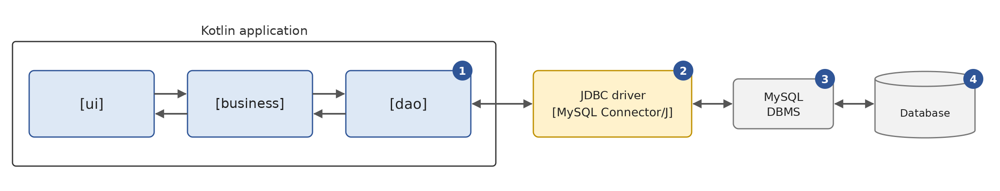

10. Acceso a bases de datos con JDBC
10.1. El controlador JDBC
Retomemos la arquitectura en capas utilizada repetidamente desde el capítulo 6. Hasta ahora, la capa [dao] de la aplicación [Tax] ha utilizado tres tipos de fuentes de datos:
- datos escritos directamente en el código ([HardwiredTax]);
- datos de un archivo de texto ([FileTax]);
- datos de un archivo JSON ([JsonTax]).
En este capítulo examinamos el caso en que los datos provienen de una base de datos. La arquitectura queda así:

En el diagrama anterior, la capa [dao] se comunica con el [1] (sistema de gestión de bases de datos) [3], que administra la base de datos [4], mediante una biblioteca de clases específica del SGBD utilizado por [2]. Esta biblioteca implementa una función de API estándar de la plataforma Java, JDBC («Java DataBase Connectivity»), que forma parte del JDK desde la versión 1.1, en 1997. Se denomina controlador JDBC («JDBC driver»). Todos los SGBD comunes incluyen un controlador JDBC, distribuido como un archivo [.jar].
Kotlin no tiene su propia API para acceder a bases de datos: un programa Kotlin que se ejecuta en la JVM usa JDBC directamente, igual que usa los archivos NIO o los hilos del JDK. Esta es una de las grandes ventajas del lenguaje: todos los controladores JDBC escritos para Java, y todas las bibliotecas construidas sobre ellos, pueden usarse sin modificación. Como veremos a lo largo de este capítulo, lo que Kotlin aporta es una forma más concisa y segura de escribir código JDBC: una función [use] para cerrar recursos, funciones de extensión para leer resultados, clases de datos para representar filas y ausencia de excepciones comprobadas.
JDBC es principalmente un conjunto de interfaces, definidas en los paquetes [java.sql] y [javax.sql] del módulo [java.sql] del JDK: [Connection], [Statement], [PreparedStatement], [ResultSet], [DataSource]… Un controlador JDBC proporciona clases que implementan estas interfaces. El código de la aplicación, en cambio, solo interactúa con las interfaces: en general no contiene los nombres de las clases del controlador. Esto difiere de otras plataformas, donde el código suele usar directamente las clases específicas de cada SGBD ([MySqlConnection], [SqlConnection]… en C#): en la JVM, la abstracción ha sido la norma desde el principio, y cambiar a otro SGBD consiste esencialmente en cambiar el controlador y la dirección de la base de datos, como veremos. No obstante, cada SGBD tiene su propio dialecto SQL: esta independencia tiene sus límites, que también examinaremos.
Usamos un único SGBD, MySQL 8, que el apéndice «El SGBD MySQL con Laragon» instala en Windows, junto con su controlador JDBC oficial, MySQL Connector/J, versión 9.7.0. Las bases de datos se crean mediante scripts SQL ejecutados con el cliente de línea de comandos [mysql]; el apéndice también muestra cómo crearlas con el cliente gráfico HeidiSQL incluido con Laragon.
10.2. Las dos formas de usar una fuente de datos
Se puede acceder a una base de datos de dos maneras distintas:
- modo conectado;
- modo desconectado.
En modo conectado, la aplicación:
- abre una conexión con la fuente de datos;
- trabaja con la fuente de datos en modo de lectura/escritura;
- cierra la conexión.
En modo desconectado, la aplicación:
- abre una conexión con la fuente de datos;
- recupera en memoria una copia de todos los datos de la fuente, o de parte de ellos;
- cierra la conexión;
- trabaja con la copia de los datos en memoria, leyéndolos y escribiéndolos;
- cuando termina el trabajo, abre una conexión, envía los datos modificados a la fuente de datos para que se actualice y cierra la conexión.
El modo conectado es el de la interfaz [ResultSet] de JDBC: las filas del resultado de una consulta se leen mientras la conexión está abierta. El modo desconectado es el de la interfaz [CachedRowSet] del paquete [javax.sql.rowset] (Java 5): una tabla en memoria que se llena a partir de una consulta, se modifica sin conexión y luego envía sus cambios a la base de datos. Estos componentes «RowSet» siguen presentes en JDK 25, pero rara vez se usan en aplicaciones nuevas: trabajar con una copia de los datos en memoria, con el posterior guardado de los cambios, es ahora tarea de un ORM («Object-Relational Mapper»), que manipula objetos ordinarios en lugar de filas de tablas. El ORM más utilizado en la JVM, Hibernate, es el tema del capítulo 11; puede usarse tanto en Kotlin como en Java. Por lo tanto, nos centraremos principalmente en el modo conectado, en el que se basa Hibernate, y mostraremos el modo desconectado solo mediante un ejemplo al final del capítulo.
10.3. Conceptos básicos del uso de una base de datos
10.3.1. La base de datos de ejemplo
Explicaremos los principales conceptos del uso de una base de datos con una base de datos MySQL llamada [dbarticles]. Contiene una sola tabla, [articles], en la que cada fila describe un artículo de una tienda:
- [ID]: un identificador único del artículo, que es la clave primaria de la tabla;
- [NAME]: el nombre del artículo, que también es único;
- [PRICE]: su precio;
- [CURRENTSTOCK]: su nivel de existencias actual;
- [MINIMUMSTOCK]: el nivel mínimo de existencias por debajo del cual el artículo debe reabastecerse.
La base de datos se crea mediante el siguiente script SQL [sql/dbarticles.sql]:
- línea 5: el script es un archivo de texto codificado en UTF-8. [SET NAMES utf8mb4] se lo indica al servidor; de lo contrario, los caracteres acentuados de los datos (líneas 31–36) podrían ser mal interpretados por el cliente [mysql];
- líneas 8–9: la base de datos se elimina si existe y luego se vuelve a crear. Así, el script puede ejecutarse varias veces para restablecer la base de datos a su estado inicial. [utf8mb4] es la codificación Unicode completa de MySQL (la codificación heredada [utf8] de MySQL codifica solo caracteres de hasta tres bytes);
- línea 12: [dbarticles] pasa a ser la base de datos actual: los comandos SQL siguientes se ejecutarán sobre ella;
- líneas 15–27: la definición de la tabla [articles]:
- línea 16: la columna [ID] es la clave primaria de la tabla ([PRIMARY KEY]). El atributo [AUTO_INCREMENT], específico de MySQL, indica que su valor lo genera el propio SGBD al insertar una fila: 1, 2, 3… Los demás SGBD tienen conceptos equivalentes, pero con una sintaxis diferente ([IDENTITY] para SQL Server, [GENERATED … AS IDENTITY] para PostgreSQL y Oracle);
- línea 18: el precio es un número decimal exacto de 10 dígitos, con 2 decimales. Conviene evitar los tipos de coma flotante para los importes, como [DOUBLE] (véase la diferencia entre [Double] y [BigDecimal] en el capítulo 3). El tipo SQL [DECIMAL] corresponde a la clase [java.math.BigDecimal], que Kotlin usa tal cual;
- líneas 22–26: restricciones de integridad. [UNQ_NAME] prohíbe que dos artículos tengan el mismo nombre; las restricciones [CHECK] prohíben un nombre vacío, un precio negativo o cero, y existencias negativas. MySQL ignoraba silenciosamente las restricciones [CHECK] hasta la versión 8.0.16; desde entonces las aplica;
- líneas 30–36: inserción de seis filas. La columna [ID] no se inicializa: el SGBD le asigna un valor.
El script se ejecuta con el cliente de línea de comandos [mysql], en la carpeta [sql] (el usuario [root] de MySQL no tiene contraseña en la instalación del apéndice; de lo contrario, agregue la opción [-p] y el cliente la solicitará):
El comando no muestra nada si todo va bien. Se puede comprobar la estructura y el contenido de la tabla con el mismo cliente:
- línea 1: la opción [-t] solicita una visualización en forma de tabla; la opción [-e] especifica los comandos SQL que se ejecutarán, y la opción [--default-character-set=utf8mb4] garantiza que los caracteres acentuados se muestren correctamente en un terminal UTF-8;
- líneas 3–9: la estructura de la tabla, obtenida mediante el comando MySQL [describe];
- líneas 12–19: el contenido de la tabla. Los valores de la columna [ID] fueron generados por el SGBD.
Una nota sobre la distinción entre mayúsculas y minúsculas: los nombres de las columnas nunca distinguen entre mayúsculas y minúsculas ([name] y [NAME] se refieren a la misma columna), pero los nombres de las tablas corresponden a nombres de archivo del servidor. No distinguen mayúsculas de minúsculas en Windows, pero sí en Linux. Para garantizar que los ejemplos funcionen en todas partes, la tabla se llama [articles], en minúsculas, y las consultas la escriben así.
Los programas de este capítulo modifican la tabla [articles]. Los resultados que se muestran aquí se obtuvieron volviendo a ejecutar el script [dbarticles.sql] antes de cada programa; los lectores que deseen reproducir exactamente los mismos resultados deben hacer lo mismo.
Ahora que tenemos una base de datos, podremos utilizarla. Antes, repasemos algunos puntos sobre SQL.
10.3.2. Los cuatro comandos básicos del lenguaje SQL
SQL («Structured Query Language») es un lenguaje parcialmente estandarizado para consultar y actualizar bases de datos. Todos los dialectos de los SGBD cumplen la parte estandarizada de SQL, pero añaden extensiones propietarias al lenguaje que aprovechan sus características específicas. Ya hemos visto dos ejemplos de esto: la generación automática de claves primarias y los tipos de datos permitidos para las columnas de las tablas suelen depender del SGBD.
Los cuatro comandos básicos del lenguaje SQL que presentamos aquí están estandarizados y son aceptados por todos los SGBD:
Comando | Función |
[select col1, col2, … from table1, table2, … where condition order by expression] | La consulta que sirve para recuperar datos de una base de datos. Solo las palabras clave [select] y [from] son obligatorias. Se realiza una unión con todas las tablas que siguen a la palabra clave [from]; solo se conservan las columnas que siguen a la palabra clave [select] ; solo se conservan las filas que cumplen la condición de la palabra clave [where] ; las filas resultantes, ordenadas según la expresión de la palabra clave [order by], forman el resultado de la consulta. Este resultado es una tabla. |
[insert into table(col1, col2, …) values (val1, val2, …)] | Inserta una fila en [table]. [(col1, col2, …)] especifica las columnas de la fila que se inicializarán con los valores [(val1, val2, …)]. |
[update table set col1=val1, col2=val2, … where condition] | Actualiza las filas de [table] según [condition] (todas las filas si no hay [where]). Para esas filas, la columna [coli] se establece en [vali]. |
[delete from table where condition] | Elimina todas las filas de [table] que cumplen [condition] (todas las filas si no hay [where]). |
Escribiremos una aplicación de consola que emite comandos SQL contra la base de datos [dbarticles]. A continuación se muestra un ejemplo del programa en acción (los comandos SQL escritos con el teclado aparecen después del indicador «SQL query»; para este documento, se proporcionaron al programa mediante redirección de la entrada estándar y luego se reinsertaron después del indicador al que responden); se anima al lector a comprender los comandos SQL emitidos y sus resultados:
- línea 2: la URL de la base de datos y el usuario JDBC: estos son los parámetros utilizados para conectarse a la base de datos;
- línea 4: se recupera el contenido de la tabla [articles];
- línea 17: se inserta una nueva fila. Observe que la columna [id] no se inicializa en esta operación, porque el SGBD generará su valor;
- línea 20: verificación. Línea 32: la fila se agregó efectivamente, con [id] 7. Con [select *], los nombres de las columnas son los de la tabla, en mayúsculas;
- línea 34: aumentamos en un 10 % el precio del artículo que se acaba de agregar;
- línea 43: el aumento de precio se realizó efectivamente;
- línea 45: se elimina el artículo agregado anteriormente;
- línea 48: se verifica que solo quedan seis artículos;
- línea 56: el programa acepta únicamente los cuatro comandos [select], [insert], [update], y [delete];
- línea 60: un error informado por el SGBD: la tabla [article] no existe;
- línea 63: la restricción de unicidad [UNQ_NAME] impide agregar un segundo artículo [bike]. Los mensajes de error de MySQL, al igual que los del controlador, están en inglés.
10.3.3. Las interfaces básicas de JDBC para el modo conectado
Volvamos al diagrama de una aplicación que accede a una base de datos mediante un controlador JDBC:
En modo conectado, la aplicación:
- abre una conexión con la fuente de datos;
- trabaja con la fuente de datos en modo de lectura/escritura;
- cierra la conexión.
En estas operaciones intervienen principalmente tres tipos de objetos:
- la conexión ([Connection]), que encapsula las propiedades y los métodos de la conexión con la base de datos;
- el comando SQL ([Statement], o [PreparedStatement] para un comando parametrizado), que encapsula las propiedades y los métodos del comando SQL ejecutado;
- el resultado ([ResultSet]), que encapsula las propiedades y los métodos del resultado de un comando SQL [select].
Estas son interfaces del paquete [java.sql]. El controlador de MySQL las implementa mediante clases de sus propios paquetes ([com.mysql.cj.jdbc.ConnectionImpl], [ClientPreparedStatement], [ResultSetImpl]…), que la aplicación no necesita conocer: obtiene sus objetos mediante métodos que devuelven interfaces. La conexión se obtiene de la clase [DriverManager] (o de una fuente de datos [DataSource], de la que hablaremos más adelante), el comando SQL lo crea la conexión y el resultado lo devuelve el comando SQL.
Estas interfaces son interfaces de Java. Kotlin las usa conforme a sus reglas estándar para acceder a código Java: un par de accesores [getXxx] / [setXxx] se usa como una propiedad [xxx] ([result.metaData] en lugar de [result.getMetaData()], [connection.autoCommit = false] en lugar de [connection.setAutoCommit(false)]), y los valores devueltos por un método de Java tienen un tipo de plataforma (denominado [String!] en los mensajes del compilador): Kotlin no sabe si pueden ser [null] y deja en manos del desarrollador la decisión de tratarlos como [String] o como [String?] (capítulo 3). Veremos que esto es importante para las columnas que pueden contener el valor SQL [NULL].
10.3.3.1. La interfaz Connection
Sirve para administrar la conexión con la base de datos. Una conexión se obtiene mediante el método estático [DriverManager.getConnection(url, user, password)], que recibe la URL de la base de datos y JDBC (por ejemplo, [jdbc:mysql://localhost:3306/dbarticles]) y las credenciales del usuario. La conexión devuelta ya está abierta. Los métodos de la interfaz [Connection] que usaremos son los siguientes:
Método | Función |
[createStatement] | Crea un comando SQL asociado a esta conexión. |
[prepareStatement] | [prepareStatement(sql)] crea un comando SQL configurado como [PreparedStatement] asociado a esta conexión. |
[prepareCall] | [prepareCall("{call name(?, ?)}")] crea un comando [CallableStatement] que ejecuta un procedimiento almacenado en la base de datos. |
[autoCommit] | [autoCommit = false] (el método de Java [setAutoCommit]) inicia una transacción (véase más adelante). |
[commit], [rollback] | confirma y revierte la transacción actual, respectivamente. |
[metaData] | (el método de Java [getMetaData]) devuelve un objeto [DatabaseMetaData] que describe el SGBD y el controlador. |
[isValid] | [isValid(seconds)] verifica que la conexión todavía se puede usar. |
[close] | cierra la conexión, junto con los comandos SQL y los resultados que produjeron. |
Abrir una conexión adopta la siguiente forma (los fragmentos de código de este apartado provienen del archivo [models/Models.kt] del proyecto, que se compila pero no se ejecuta):
La inferencia de tipos asigna el tipo [Connection!] a [connection]: una conexión que se puede usar sin una comprobación de nulos ([getConnection] nunca devuelve [null]: si falla, lanza una excepción).
10.3.3.2. La interfaz Statement
Sirve para ejecutar un comando SQL. Los métodos de esta interfaz que usaremos son los siguientes:
Método | Función |
[executeQuery] | [executeQuery(sql)] ejecuta un comando SQL [select]. Devuelve un objeto [ResultSet] que representa el resultado de [select]. |
[executeUpdate] | [executeUpdate(sql)] ejecuta un comando SQL [update], [insert], [delete] (o un comando de definición como [create table]). Devuelve el número de filas afectadas por la operación (actualizaciones, inserciones, eliminaciones). [executeLargeUpdate] (Java 8) devuelve este número en forma de [Long]. |
[execute] | [execute(sql)] ejecuta cualquier comando SQL. Devuelve [true] si el comando produjo un [ResultSet], que se obtiene entonces mediante la propiedad [resultSet], y [false] si produjo un número de filas, que se obtiene mediante la propiedad [updateCount]. |
[addBatch], [executeBatch] | agregan un comando a un lote y ejecutan el lote (véase más adelante). |
[generatedKeys] | (el método de Java [getGeneratedKeys]) devuelve las claves primarias generadas por el SGBD durante un [insert]. |
[queryTimeout] | [queryTimeout = seconds] establece el tiempo máximo de ejecución del comando. |
[close] | cierra el comando SQL, así como su [ResultSet]. |
La interfaz [PreparedStatement] deriva de [Statement]: es un comando SQL parametrizado, cuyo texto se fija al crearlo y cuyos parámetros reciben valores mediante los métodos [setXxx]. Lo examinaremos en la sección «Consultas parametrizadas». La ejecución de comandos SQL sin transacción adopta la siguiente forma:
10.3.3.3. La interfaz ResultSet
Encapsula los resultados de un comando SQL [select]. Un objeto [ResultSet] representa una tabla con filas y columnas, que se procesa secuencialmente: primero la primera fila, luego la segunda, y así sucesivamente, sin posibilidad de retroceder (este es el tipo predeterminado, [TYPE_FORWARD_ONLY]; JDBC también admite resultados que se pueden recorrer en ambos sentidos, pero rara vez se usan). El [ResultSet] tiene un cursor inicialmente situado antes de la primera fila: hay que llamar a [next] para leer la primera fila. Los métodos de esta interfaz que usaremos son los siguientes:
Método | Función |
[next] | Avanza a la siguiente fila de la tabla de resultados. Devuelve [true] si la fila se leyó correctamente y [false] si no quedan más filas. |
[getInt] | [getInt(i)] devuelve el valor entero de la columna número i de la fila actual. Las columnas se numeran a partir de 1, no de 0. [getInt("name")] devuelve el valor de la columna llamada [name]. Otros métodos similares son [getBoolean], [getBigDecimal], [getDouble], [getLong], [getString]… Como tienen un parámetro, Kotlin no los convierte en propiedades. |
[getObject] | [getObject(i)] devuelve el valor de la columna i como un [Any] (un [Object] de Java), del tipo elegido por el controlador; [getObject(i, LocalDate::class.java)] lo devuelve en el tipo solicitado (en Kotlin, [X::class.java] designa el objeto Java [Class] de una clase, el [X.class] de Java). |
[wasNull] | devuelve [true] si la última columna leída no tenía valor, lo que se representa mediante el valor SQL [NULL]. Los métodos que devuelven un objeto ([getString], [getBigDecimal], [getObject]…) devuelven entonces [null]; los que devuelven un tipo base ([getInt], [getDouble]…) devuelven 0: solo [wasNull] permite distinguir 0 de [NULL]. |
[metaData] | (el método Java [getMetaData]) devuelve un objeto [ResultSetMetaData] que describe las columnas del resultado: [columnCount] (el número de columnas), [getColumnLabel(i)] (el nombre de la columna n.º i), [getColumnTypeName(i)] (su tipo SQL)… |
[close] | cierra el resultado. |
El procesamiento de un objeto [ResultSet] suele tener el siguiente aspecto:
El bucle [while (result.next())] es el mismo que en Java: veremos que, en Kotlin, se escribe una sola vez en una función de extensión, en lugar de repetirse en cada función que lee un resultado.
El tipo de plataforma merece una nota aquí. Para una columna que acepta el valor SQL [NULL], [getString(i)] devuelve [null]; si se escribe [val name: String = result.getString(2)], Kotlin inserta una verificación y lanza un error [NullPointerException] en cuanto se produce la asignación, con el mensaje “getString(...) must not be null”. Por lo tanto, los valores de columna que pueden ser *[NULL]* deben declararse como [String?]*** y procesarse luego con los operadores ***[?.] y ***[?:]* del capítulo 3. En nuestra tabla, todas las columnas son [NOT NULL]: el problema no se presenta.
Con MySQL Connector/J, las filas del resultado se transfieren por defecto, todas a la vez, del servidor a la memoria de la aplicación en cuanto se ejecuta la consulta; [next] las recorre luego. Para un resultado de varios millones de filas, se puede indicar al controlador que las reciba a medida que se leen (parámetro [useCursorFetch=true] en la URL y [fetchSize = n] en el comando SQL): se trata de un ajuste específico del controlador que no usaremos.
10.3.4. Manejo de errores
La capa [dao] puede encontrar numerosos errores al operar la base de datos: servidor caído, base de datos inexistente, contraseña incorrecta, error de sintaxis SQL, violación de una restricción de integridad, etc. Estos se notifican como excepciones [SQLException]. En Java, [SQLException] es una excepción comprobada (checked): todos los métodos de JDBC la declaran en su cláusula [throws], y el compilador de Java exige que el código que los llama la capture o la declare a su vez. Kotlin no tiene excepciones comprobadas (capítulo 3): el compilador no impone ninguna restricción y una función Kotlin que llama a JDBC no necesita declarar nada. Esto es a la vez una libertad y una responsabilidad: nada avisa al desarrollador de que una línea puede fallar; le corresponde decidir dónde se manejan los errores. Una capa [dao] debe manejar estos errores y, pase lo que pase, liberar los recursos que ha adquirido: la conexión, el comando SQL y el resultado deben cerrarse. Escrito con cláusulas [finally] —como se hacía en Java antes de Java 7—, el código mostrado arriba para procesar el resultado de una orden [select] queda así:
Este código es engorroso: la conexión debe declararse como [var], de tipo [Connection?], antes del [try] para que sea visible en la cláusula [finally], y su cierre puede provocar a su vez una [SQLException] (línea 23), que debe interceptarse en la cláusula [finally]. Observe la llamada segura a [connection?.close()]: si no se pudo abrir la conexión, [connection] se evalúa como [null] y no se hace nada.
El capítulo 3 presentó la solución de Kotlin: la función de extensión use, definida para cualquier objeto *[AutoCloseable] , ejecuta el bloque (la lambda) que se le pasa y cierra el objeto al salir del bloque, sea cual sea la forma de salir. Equivale a la instrucción try-with-resources de Java. Los objetos *[Connection]*, *[Statement], y *[ResultSet] implementan la interfaz *[AutoCloseable] :
- líneas 3–5: se abren tres recursos, cada uno mediante un
*[use]. El objeto abierto es el parámetro de la lambda ([connection],[statement],[result]); se le da un nombre en lugar de usar [it], porque las tres lambdas están anidadas y un [it] designaría el objeto del [use] más interno. A diferencia detry-with-resourcesde Java, que acepta varios recursos entre paréntesis,*[use]maneja un solo recurso: por eso se anidan los[use]. Los recursos se cierran en el orden inverso al de su apertura: primero el resultado, luego el comando SQL y por último la conexión. Una excepción lanzada por un cierre no borra la que pudo haber provocado la salida del bloque: se adjunta a esta como excepción “suprimida” ([suppressedExceptions]), como en Java; - línea 13: la cláusula [catch] intercepta los errores de conexión y de ejecución, así como los de cierre.
Dado que [use] es una función [inline] (capítulo 7), su bloque no es un objeto lambda: se copia en el lugar de la llamada, y una instrucción [return] escrita dentro del bloque termina la función envolvente después de cerrar el recurso. Además, [use] devuelve el valor de su bloque: [val n = connection.createStatement().use { it.executeUpdate(sql) }] ejecuta el comando, cierra el objeto [Statement] y devuelve el número de filas modificadas. Aprovecharemos a menudo estas dos propiedades.
La ventaja de [use] no es solo el ahorro de líneas: libera al desarrollador de tener que cerrar manualmente la conexión. Sin embargo, olvidar cerrar una conexión puede pasar inadvertido y hacer que la aplicación “se caiga” de forma aparentemente aleatoria cuando el DBMS (o el pool de conexiones, que veremos más adelante) alcanza el número máximo de conexiones abiertas que puede soportar. En el resto de este curso, todo recurso JDBC se abre mediante una instrucción use.
La clase [SQLException] proporciona tres datos sobre el error, que Kotlin presenta como propiedades:
- [message]: el mensaje de error;
- [errorCode]: el código de error específico del DBMS (el número de error de MySQL: 1049, 1062…);
- [sqlState]: un código de error de cinco caracteres definido por el estándar SQL (“SQLSTATE”), común a todos los DBMS para los errores más habituales: la clase [42] designa un error de sintaxis o de acceso, [23] una violación de una restricción de integridad, [08] un error de conexión…
Observe la propiedad [sqlState], derivada del método Java [getSQLState]: cuando un nombre comienza con varias letras mayúsculas, Kotlin las convierte en minúsculas, salvo la última si inicia la palabra siguiente ([SQLState] se convierte en [sqlState]). Desde Java 6 (JDBC 4.0), [SQLException] también tiene clases derivadas estándar, que los controladores lanzan según la naturaleza del error. Las principales son las siguientes:
Clase | Error |
[SQLSyntaxErrorException] | error de sintaxis SQL, tabla o base de datos inexistente, permisos insuficientes (SQLSTATE, clase 42) |
[SQLIntegrityConstraintViolationException] | Violación de una restricción de integridad: clave duplicada, clave externa, columna [NOT NULL] (SQLSTATE, clase 23) |
[SQLDataException] | Datos no válidos: valor demasiado grande, conversión imposible (SQLSTATE, clase 22) |
[SQLTimeoutException] | Tiempo de espera agotado ([queryTimeout]) |
[SQLTransactionRollbackException] | Transacción revertida por el DBMS, por ejemplo, a causa de un bloqueo mutuo (deadlock) |
[SQLNonTransientConnectionException], [SQLRecoverableException] | Problema de conexión |
El programa [Jdbc02.kt] provoca varios errores y los muestra:
Resultados:
Comentarios:
- líneas 10–12: los parámetros de conexión a la base de datos, definidos al inicio del programa como constantes de alto nivel llamadas [const val], privadas del archivo;
- línea 15: el número de error de MySQL “Duplicate entry”, tal como se denomina en la documentación de MySQL;
- líneas 19–27: seis operaciones que fallan: base de datos inexistente; servidor inaccesible (ningún servidor MySQL escucha en el puerto 3399, lo que produce el mismo error que un servidor detenido); error de sintaxis; tabla inexistente; nombre de artículo duplicado; precio negativo. El parámetro [connectTimeout=5000] de la URL de la línea 20 limita la espera de conexión a 5 segundos (5000 ms);
- línea 31: la función [execute] ejecuta el comando SQL [query] en la base de datos especificada por la URL [url];
- líneas 34–35: la conexión y el comando SQL se abren mediante dos [use] anidados. El segundo cabe en una sola línea: la lambda [{ statement -> statement.execute(query) }] tiene una sola instrucción;
- línea 35: el método [execute] ejecuta cualquier comando SQL: [select] o [insert]. Si lanza una excepción, el mensaje “no error” de la línea 37 no aparece;
- línea 39: un [when] sobre la excepción, con cláusulas [is Type] (capítulo 3);
- línea 41: una guardia ([if], Kotlin 2.2) permite tratar por separado un error específico: una violación de una restricción de integridad ([SQLIntegrityConstraintViolationException]) con un código MySQL igual a 1062, es decir, una clave duplicada. Equivale al patrón con guardia [case … when …] del [switch] de Java 21. En un caso así, una aplicación mostraría un mensaje comprensible para el usuario;
- líneas 44–46: los demás errores. Se muestra la clase de la excepción ([ex.javaClass.simpleName]: [javaClass] devuelve el objeto Java [Class]), el código de error de MySQL y el código SQLSTATE, seguidos de la primera línea del mensaje: algunos mensajes del controlador ocupan varias líneas. La propiedad [message] es de tipo [String?] (una excepción puede no tener mensaje): se maneja mediante llamadas seguras, [?.lineSequence()?.first()]; [lineSequence] divide la cadena en una secuencia de líneas, de las cuales [first] toma la primera. Si el mensaje fuera [null], la expresión se evaluaría como [null] y la plantilla mostraría “null”.
Los resultados muestran que el controlador MySQL usa las clases estándar: [SQLSyntaxErrorException] para una base de datos inexistente (1049), un error de sintaxis (1064) o una tabla inexistente (1146), todas ellas derivadas de SQLSTATE y [42xxx]. Un servidor inaccesible genera una [CommunicationsException], una clase del controlador (derivada de [SQLRecoverableException]): no hay código de error de MySQL, ya que el servidor no respondió, pero el SQLSTATE y [08S01] indican un fallo de conexión. Una violación de una restricción [CHECK] (error 3819) es simplemente una [SQLException], derivada de SQLSTATE y [HY000] (“general error”): MySQL no le asigna un SQLSTATE de la clase 23. Por lo tanto, no se puede confiar plenamente en las clases derivadas: el código de error y el SQLSTATE siguen siendo útiles.
Una capa [dao] que quiera mantenerse independiente del DBMS usa únicamente las clases estándar y el SQLSTATE; los códigos de error ([errorCode]) son específicos de cada DBMS.
Una última nota sobre las excepciones comprobadas. Una función Kotlin que lanza una [SQLException] no la declara en ningún lugar; si ha de ser llamada desde código Java, este no podrá capturar la excepción mediante un [catch (SQLException e)], que el compilador de Java rechaza cuando ninguno de los métodos llamados la declara. Por eso se agrega a la función Kotlin la anotación [@Throws(SQLException::class)], que genera la cláusula [throws] que Java espera. Nuestros programas, escritos íntegramente en Kotlin, no la necesitan.
10.3.5. Configuración del proyecto de ejemplo
El controlador JDBC para MySQL es una biblioteca publicada en Maven Central, el repositorio de bibliotecas desde el que Gradle obtiene las dependencias (capítulo 2). La carpeta [10-jdbc] de este capítulo es una compilación multiproyecto de Gradle (capítulo 2): los programas de este capítulo forman el subproyecto [jdbc], y la aplicación [Tax] versión 6, tratada al final del capítulo, consta de otros dos subproyectos:
El archivo [settings.gradle.kts] de este capítulo declara los subproyectos:
- líneas 3–6: el plugin que permite a Gradle descargar por sí mismo el JDK si no lo encuentra en la máquina (capítulo 2);
- línea 11: el subproyecto [jdbc], cuya carpeta lleva el mismo nombre;
- líneas 13–16: la versión 6 de la aplicación [Tax], presentada al final del capítulo.
El archivo [build.gradle.kts] del subproyecto [jdbc] es el siguiente:
- líneas 2–5: el plugin de Kotlin para JVM, cuya versión fija el proyecto raíz (capítulo 2), y el plugin [application], que proporciona la tarea [run];
- líneas 15–23: las cuatro bibliotecas del proyecto, descargadas por Gradle desde Maven Central durante la primera compilación:
- línea 17: el controlador JDBC para MySQL, MySQL Connector/J, con las coordenadas [com.mysql:mysql-connector-j]. Hasta la versión 8.0.30 se publicaba con las coordenadas [mysql:mysql-connector-java], que aún se encuentran en muchos proyectos. Un programa que usa solo las interfaces de JDBC necesita el controlador únicamente en tiempo de ejecución: entonces se declara con [runtimeOnly], lo que garantiza que no se puedan usar clases del controlador por error en el código. Aquí lo declaramos con [implementation] porque el programa [Jdbc03] usa una clase del controlador, [MysqlDataSource], a modo de demostración;
- línea 18: el pool de conexiones HikariCP, que usaremos desde el programa [Jdbc03];
- línea 21: HikariCP escribe sus mensajes de registro a través de la API SLF4J (“Simple Logging Facade for Java”), que requiere una implementación: usamos Logback, necesaria solo en tiempo de ejecución ([runtimeOnly]). Sin ella, SLF4J mostraría una advertencia al iniciar. El archivo [src/main/resources/logback.xml], que se muestra a continuación, solo muestra advertencias y errores;
- línea 23: la biblioteca de corrutinas, kotlinx-coroutines (capítulo 9), usada por el programa [Jdbc08Coroutines], que ejecuta solicitudes JDBC en corrutinas;
- líneas 27–33: el compilador, configurado como en todos los proyectos del curso: JDK 25, advertencias tratadas como errores, nombres de parámetros conservados en las clases compiladas;
- líneas 38–40: el programa ejecutado por [gradlew run] se especifica mediante la propiedad [main]; por defecto, es [jdbc01.Jdbc01Kt];
- líneas 43–45: el programa ejecutado puede leer desde el teclado, lo que [Jdbc01] requiere;
- líneas 48–51: los programas lanzados por Gradle escriben su salida en UTF-8 para que los caracteres con tilde se muestren correctamente en Windows (capítulo 2).
El archivo de configuración de Logback es el siguiente:
- líneas 4–8: los mensajes se escriben en la consola con el formato “clase nivel - mensaje”;
- línea 9: solo se muestran los mensajes con nivel [WARN] (advertencia) o [ERROR] . Con el nivel [INFO], se verían los mensajes de inicio y cierre del pool HikariCP.
Hay dos controladores JDBC habituales para MySQL:
- [com.mysql:mysql-connector-j] (“Connector/J”), publicado por Oracle, propietaria de MySQL, bajo la licencia GPL v2 con una excepción (“Universal FOSS Exception”) que permite usarlo con software distribuido bajo otras licencias libres; una licencia comercial cubre todos los demás casos. Este es el controlador oficial, que usamos;
- [org.mariadb.jdbc:mariadb-java-client], el controlador para MariaDB (una variante libre de MySQL), con licencia LGPL, que también funciona con MySQL.
Ambos controladores implementan las mismas interfaces JDBC: pasar de uno a otro solo requiere cambiar la dependencia en [build.gradle.kts] y el inicio de la URL ([jdbc:mariadb:] en lugar de [jdbc:mysql:]).
Una nota histórica: hasta Java 5, había que cargar la clase del controlador antes de abrir una conexión, mediante una instrucción como [Class.forName("com.mysql.jdbc.Driver")], que aún se encuentra en muchos ejemplos de Internet. Desde Java 6 (JDBC 4.0), esto ya no es necesario: cada archivo del controlador declara su clase en un archivo [META-INF/services/java.sql.Driver], y [DriverManager] carga automáticamente todos los controladores presentes en el classpath mediante el mecanismo de servicios ([ServiceLoader]).
Los parámetros de conexión no deben codificarse de forma fija en una aplicación real: dependen de la máquina en la que se instala la aplicación. El primer programa de este capítulo los lee de un archivo de propiedades (capítulo 6), [dbarticles.properties], ubicado en la carpeta del subproyecto:
- Línea 2: la URL JDBC de la base de datos. Una URL JDBC tiene la forma [jdbc:subprotocol:details]. El subprotocolo identifica el controlador ([mysql]), y los detalles —cuyo formato depende del controlador— identifican la base. Para MySQL, son los siguientes:
- [//localhost]: el nombre de la máquina en la que se encuentra el DBMS MySQL —en este caso, [localhost]—, es decir, la máquina en la que se ejecuta el programa;
- [:3306]: el puerto en el que el servidor MySQL escucha las conexiones; por defecto es 3306;
- [/dbarticles]: el nombre de la base de datos;
- pueden seguir parámetros opcionales del controlador, después de un signo de interrogación, con la forma [?param1=value1¶m2=value2]. Encontraremos [connectTimeout], [rewriteBatchedStatements], y [allowMultiQueries];
- línea 3: el usuario MySQL —aquí, [root]—, el administrador del DBMS;
- línea 4: su contraseña, que aquí se deja en blanco.
La documentación de Connector/J ofrece una lista completa de los parámetros de la URL: Connector/J Configuration Properties.
Los demás programas de este capítulo, que son más cortos, guardan sus parámetros de conexión en constantes al inicio del programa, como en [Jdbc02.kt]: esto es más sencillo para los ejemplos, pero no debe hacerse en una aplicación real.
Para ejecutar los programas, ubíquese en la carpeta [10-jdbc] y escriba:
El primer comando ejecuta [Jdbc01] y el segundo ejecuta [Jdbc02]. El prefijo [:jdbc:] designa la tarea [run] del subproyecto [jdbc]; la tarea [run] se ejecuta en la carpeta del subproyecto, [10-jdbc/jdbc], donde se encuentra el archivo [dbarticles.properties]. La opción [-q] (“quiet”) suprime los mensajes de Gradle: solo queda la salida del programa. Por supuesto, también se pueden ejecutar los programas desde IntelliJ IDEA haciendo clic en el triángulo verde junto a la función [main] (en ese caso, habrá que verificar el directorio actual en la configuración de ejecución). En lo sucesivo, solo reproduciremos la salida de los programas.
10.3.6. El programa de ejemplo
El programa [Jdbc01.kt], cuyo ejemplo de ejecución vimos, es el siguiente (programa principal):
- Líneas 5–8: las interfaces y clases de JDBC utilizadas, todas del paquete [java.sql]. El programa no contiene el nombre de ninguna clase del controlador de MySQL: solo la URL y JDBC, leídas de la configuración, hacen referencia a MySQL;
- Línea 16: los cuatro comandos SQL aceptados, en un conjunto de solo lectura creado con [setOf] (Capítulo 5);
- líneas 19–21: los tres parámetros de conexión se combinan en una clase de datos. En lugar de pasar tres cadenas a cada función, como hace el programa Java del curso, se pasa un objeto [ConnectionParameters], que sabe abrir una conexión: su método [connect] llama a [DriverManager.getConnection] con sus propias propiedades. El tipo devuelto, [Connection], se especifica explícitamente: sin él, la función devolvería el tipo de plataforma [Connection!];
- líneas 25–29: lectura del archivo de propiedades, como se describe en el Capítulo 6. La función de extensión [bufferedReader] de [kotlin.io.path] abre el archivo en UTF-8, y [use] lo cierra. [getProperty] devuelve el valor de una clave, o [null] si la clave no existe: su tipo en Kotlin es [String?]. Como la URL es obligatoria, el operador Elvis [?:] lanza una [IOException] cuando falta, lo que permite tratar de la misma manera un archivo ausente y un archivo incompleto; [getProperty(key, default)] devuelve un valor predeterminado para los otros dos parámetros;
- línea 32: la función de nivel superior [main], sin parámetros, ya que el programa no utiliza sus argumentos;
- líneas 34–38: [try] es una expresión (Capítulo 3): su valor es el del bloque [try] si todo sale bien; en caso de error, la cláusula [catch] muestra un mensaje y termina el programa mediante [return]. El archivo se busca en la carpeta actual, aquella desde la que se lanza el programa: es la carpeta del subproyecto cuando se escribe [gradlew :jdbc:run];
- línea 45: el bucle de entrada de los comandos SQL escritos en el teclado y su ejecución en la base de datos;
- Líneas 47–48: [print] muestra el indicador sin pasar a la línea siguiente, y luego [readlnOrNull] lee una línea escrita en el teclado; devuelve [null] si la entrada estándar está cerrada. La llamada segura [?.trim()] seguida de [orEmpty] transforma este [null] en una cadena vacía, lo que detiene el bucle en la línea siguiente;
- línea 52: la primera palabra de la consulta, obtenida dividiendo la consulta por los espacios (expresión regular [\s+], Capítulo 5). Se convierte a minúsculas para la comparación, pero la consulta en sí no se modifica: convertir toda la consulta a minúsculas impediría la inserción de un artículo llamado “Bike”;
- líneas 53–55: si la consulta no es válida, se muestra un mensaje de error y el programa pasa a la siguiente consulta. El operador [!in] llama al método [contains] del conjunto (Capítulo 4);
- líneas 58–61: se ejecuta el comando SQL. Su forma varía según se trate de un comando [select] o de un comando [insert], [update] o [delete] : en el primer caso, el comando recupera datos de la base de datos sin modificarla; en el segundo, actualiza la base de datos sin recuperar ningún dato. En ambos casos, la ejecución se delega en una función que recibe los parámetros de conexión y el comando SQL que se va a ejecutar.
Observe la ausencia de cualquier declaración de excepciones: en Java, la lectura del archivo obliga a interceptar o declarar la excepción [IOException] . En Kotlin, esto es una elección: aquí capturamos la [IOException] porque es donde sabemos qué hacer con el error (avisar al usuario y detenerse).
10.3.7. Ejecución de una consulta SELECT
La ejecución de comandos SQL implica los siguientes pasos:
- conectarse a la base de datos;
- enviar los comandos SQL a la base de datos;
- procesar los resultados de los comandos SQL;
- cerrar la conexión.
Los pasos 2 y 3 pueden repetirse; la conexión se cierra únicamente al final del procesamiento de la base de datos. Las conexiones abiertas son recursos limitados en un SGBD: deben conservarse, y siempre se procura limitar la duración de una conexión abierta. En nuestro programa, la conexión se cierra después de cada comando SQL y se abre una nueva para el comando siguiente.
Sin embargo, abrir una conexión es costoso: requiere establecer una conexión de red con el servidor, posiblemente negociar el cifrado y autenticarse. [DriverManager] no hace nada para reducir este costo: cada llamada a [getConnection] abre una nueva conexión de red, y cada [close] la cierra realmente. Para una herramienta interactiva como esta, no es un problema. Una aplicación que ejecuta muchos comandos SQL, un servidor web por ejemplo, utiliza en cambio un pool de conexiones: cuando la aplicación cierra una conexión, el pool no la cierra realmente sino que la devuelve al pool; cuando la aplicación solicita una nueva conexión, recibe una de las conexiones del pool que ya está establecida. La ventaja de este sistema es que es transparente para el desarrollador: el código que abre y cierra conexiones mediante un [use] no necesita modificarse. Veremos cómo utilizarlo en la sección “Fuentes de datos y pools de conexiones”. Por lo tanto, abrir una conexión al inicio de cada operación y cerrarla al final es la mejor práctica.
Primero nos ocuparemos de la ejecución de los comandos SQL [select]. La función [executeSelect] de nuestro programa de ejemplo y la función [displayResultSet] que esta utiliza son las siguientes:
- Línea 2: la función recibe los parámetros de conexión y el comando SQL [select] [query] que se va a ejecutar. Como las otras dos funciones del programa, se declara como [private]: solo es visible en el archivo [Jdbc01.kt];
- líneas 5–7: tres instrucciones [use] anidadas abren tres recursos:
- línea 5: la conexión a la base de datos, obtenida de [DriverManager] mediante el método [connect]. [DriverManager] consulta a cada controlador presente en el classpath: el primero que reconoce la URL abre la conexión. Es entonces cuando se utilizan los parámetros de conexión y cuando se producen los errores de conexión. La conexión es del tipo definido por la interfaz [Connection]: el código no sabe que se trata de un objeto del controlador de MySQL;
- Línea 6: el comando SQL, un objeto [Statement] creado por la conexión. El mismo tipo de objeto se utiliza para ejecutar un comando [select] y un comando [update], [insert] o [delete] ;
- Línea 7: el comando [select] se ejecuta mediante el método [executeQuery], que devuelve un objeto [ResultSet];
- Línea 9: la función [displayResultSet] se encarga de mostrar los resultados;
- Líneas 13–14: cualquier operación de base de datos puede lanzar una [SQLException]. Esto es aún más probable aquí porque los comandos SQL escritos por el usuario pueden contener errores de sintaxis. Debemos poder informar de ello al usuario: se captura la excepción y se muestra su mensaje. Cuando se ejecuta la cláusula [catch], ya sea que la excepción provenga de la conexión, de la ejecución o de la lectura de las filas, las instrucciones [use] ya han cerrado el conjunto de resultados, el comando SQL y la conexión;
- Línea 19: la función recibe un objeto [ResultSet]. Sus métodos pueden lanzar una [SQLException]; en Java, el método correspondiente debe declararla como [throws SQLException]. En Kotlin no se necesita ninguna declaración: la excepción simplemente se propaga a la función que llama, que la captura;
- líneas 21–25: se muestran los nombres de las columnas de la tabla de resultados del [select]. Son las columnas [coli] de la consulta [select col1, col2, … from table …]. Las proporcionan los metadatos del resultado, un objeto [ResultSetMetaData] obtenido mediante la propiedad [metaData]: [columnCount] proporciona el número de columnas, y [getColumnLabel(i)] proporciona el nombre de la columna número i, o su alias si la consulta especifica uno ([select count(*) as total …]). Como las columnas se numeran a partir de 1, se construye el rango [1..metadata.columnCount] (línea 22), y luego [joinToString] (Capítulo 5) convierte cada número en un nombre y concatena los nombres, separándolos con comas. No se necesita ningún arreglo intermedio, a diferencia de la versión Java. ["-".repeat(n)] produce una cadena de n guiones;
- líneas 27–28: se recorre la tabla de resultados y se muestran los valores de cada fila, separados por espacios, utilizando el mismo rango [columns] y la misma función [joinToString];
- línea 28: el tipo de la columna i del resultado se desconoce porque no se conoce la consulta escrita por el usuario. Por lo tanto, no podemos usar la sintaxis [result.getXxx(i)], donde [Xxx] es el tipo de la columna. En su lugar, utilizamos [getObject(i)], que devuelve el valor en forma de [Any!]; la plantilla ["${result.getObject(it)}"] lo convierte en una cadena mediante su método [toString] (y muestra “null” para un valor SQL [NULL]). Para la columna [price], que es de tipo SQL [DECIMAL(10,2)], el objeto es un [BigDecimal] con dos decimales, que su método [toString] muestra con punto decimal ([500.00]): a diferencia de [String.format], [toString] no depende del idioma de la estación de trabajo. Una presentación “a la francesa” utilizaría ["%.2f".format(price)] o la clase [NumberFormat] (Capítulo 5).
10.3.8. Ejecución de una consulta de actualización: INSERT, UPDATE, DELETE
El código de la función [executeUpdate] es el siguiente:
La ejecución de un comando de actualización difiere de la de un comando [select] únicamente en el método utilizado para el comando SQL: [executeQuery] para [select], [executeUpdate] para [update], [insert], [delete]:
- líneas 4–5: esta vez solo hay dos recursos: la conexión y el comando SQL;
- Línea 7: el comando [update], [insert], o [delete] se ejecuta mediante el método [executeUpdate]. Si tiene éxito, este método devuelve el número de filas actualizadas ([update]), insertadas ([insert]) o eliminadas ([delete]);
- Línea 9: se muestra este número de filas.
Se recomienda al lector revisar el ejemplo de ejecución presentado en la sección “Los cuatro comandos básicos del lenguaje SQL”.
10.4. JDBC e independencia del SGBD
10.4.1. Los controladores JDBC actuales
El código que hemos examinado no contiene el nombre de ninguna clase del controlador de MySQL: solo utiliza las interfaces de [java.sql]. Para que funcione con otro SGBD, en principio basta con agregar al proyecto el controlador de ese SGBD y cambiar la URL de JDBC. Estos son los principales controladores JDBC actuales, todos publicados en Maven Central:
SGBD | Dependencia de Gradle | URL JDBC | Notas |
MySQL | [com.mysql:mysql-connector-j] | [jdbc:mysql://host:3306/database] | El controlador oficial utilizado en este curso |
MariaDB, MySQL | [org.mariadb.jdbc:mariadb-java-client] | [jdbc:mariadb://host:3306/database] | |
PostgreSQL | [org.postgresql:postgresql] | [jdbc:postgresql://host:5432/database] | |
SQL Server, Azure SQL | [com.microsoft.sqlserver:mssql-jdbc] | [jdbc:sqlserver://host:1433;databaseName=database] | el controlador de Microsoft |
Oracle | [com.oracle.database.jdbc:ojdbc11] | [jdbc:oracle:thin:@//host:1521/service] | |
H2 | [com.h2database:h2] | [jdbc:h2:mem:database] o [jdbc:h2:./file] | un SGBD escrito en Java, integrado en la aplicación: base de datos en memoria o en archivo, sin servidor; muy utilizado para pruebas |
SQLite | [org.xerial:sqlite-jdbc] | [jdbc:sqlite:file.db] | Una base de datos en un archivo, sin servidor |
Observe que el formato de la URL, a continuación de [jdbc:], es específico de cada controlador.
La estructura es la siguiente:

La aplicación solo conoce las interfaces de JDBC. Los objetos concretos los crea el controlador, que [DriverManager] selecciona según la URL: cada controlador presente en el classpath declara su clase principal, una implementación de la interfaz [java.sql.Driver], cuyo método [connect(url, properties)] devuelve [null] si la URL no está destinada a él ([acceptsURL(url)] también permite consultarlo). El programa [Jdbc03.kt] lo demuestra. Recibe como argumento la URL JDBC de la base de datos:
Resultados con la URL de MySQL (valor predeterminado):
Resultados con la URL de una base de datos PostgreSQL, cuyo controlador no está en el classpath:
Aquí tratamos la primera parte del programa (la función [main] hasta la línea 36, y la función [displayArticles]); la segunda parte se trata en la sección siguiente:
- Línea 17: la URL JDBC de la base de datos, pasada como argumento; de lo contrario, se utiliza la base de datos MySQL [dbarticles] predeterminada. [firstOrNull] devuelve el primer elemento del arreglo de argumentos, o [null] si está vacío; el operador Elvis [?:] reemplaza entonces [null] por la URL predeterminada. Con Gradle, el argumento se pasa mediante la opción [--args];
- Líneas 21–22: [DriverManager.drivers] (Java 9) devuelve un flujo ([Stream]) de los controladores cargados. Un flujo de Java no es una colección de Kotlin, pero tiene un método [iterator()]: esto basta para que el bucle [for] de Kotlin lo recorra. Para cada controlador, [driver.javaClass.name] devuelve el nombre completo de su clase, y las propiedades [majorVersion] y [minorVersion] (los métodos Java [getMajorVersion] y [getMinorVersion]) proporcionan su versión. Solo hay un controlador presente en el classpath: el de MySQL, de clase [com.mysql.cj.jdbc.Driver], versión 9.7 (línea 3 de los resultados);
- línea 27: [DriverManager] busca un controlador que admita la URL. Si ninguno la admite, [getConnection] lanza una [SQLException] “No suitable driver found” (línea 4 del segundo conjunto de resultados). Este es el error que se obtiene cuando se ha omitido la dependencia del controlador en el [build.gradle.kts], o se ha cometido un error tipográfico en la URL;
- líneas 28–31: los metadatos de la conexión, un objeto [DatabaseMetaData], describen el SGBD (nombre, versión), el controlador y la versión de JDBC que implementa: JDBC 4.2, la versión de Java 8. JDK 25 define JDBC 4.3 (Java 9), que incluye solo adiciones menores; [DatabaseMetaData] también describe las capacidades del SGBD (transacciones, lotes, etc.), sus tablas y sus columnas. Toda esta información se obtiene mediante los métodos [getXxx] sin parámetros, que Kotlin presenta como propiedades ([databaseProductName], [driverVersion]…). La propiedad [jdbcMajorVersion] corresponde al método Java [getJDBCMajorVersion]: como en el caso de [sqlState], las letras mayúsculas iniciales se convierten en minúsculas;
- línea 32: ejecución de una consulta parametrizada por la función [displayArticles];
- líneas 61–62: la consulta tiene un parámetro, denotado [?], que recibe su valor de [setInt(1, 200)]. Las consultas parametrizadas se tratan con más detalle más adelante;
- líneas 64–65: los resultados muestran que los objetos manipulados a través de las interfaces son objetos del controlador de MySQL: [ConnectionImpl], [ClientPreparedStatement], [ResultSetImpl] (línea 6 de los resultados);
- Líneas 66–67: como se conocen los tipos de las columnas, se utilizan los métodos [getInt], [getString] y [getBigDecimal] , que devuelven directamente un valor del tipo esperado.
Para que este programa funcione con PostgreSQL, basta con agregar la dependencia [runtimeOnly("org.postgresql:postgresql:…")] a [build.gradle.kts] y crear la base de datos [dbarticles] dentro de PostgreSQL: [DriverManager] encontraría entonces dos controladores y seleccionaría el de PostgreSQL para una URL [jdbc:postgresql:…]. En la máquina utilizada para escribir este curso solo está instalado MySQL: no lo hicimos.
10.4.2. Fuentes de datos y pools de conexiones
[DriverManager] es la forma tradicional de obtener una conexión. Desde JDBC 2.0, las aplicaciones prefieren utilizar en su lugar una fuente de datos, un objeto que implementa la interfaz [javax.sql.DataSource]. Una fuente de datos se configura una sola vez (URL, nombre de usuario, contraseña, ajustes del controlador) y luego proporciona conexiones mediante su método [getConnection()], sin parámetros (la propiedad [connection] en Kotlin). El código que utiliza la fuente de datos ignora tanto la URL como las credenciales: en una aplicación, lo que se registra en el contenedor de inyección de dependencias (Capítulo 6) es la propia fuente de datos, y no los parámetros de conexión. Hay dos categorías principales de fuentes de datos:
- las que proporcionan los controladores, como [com.mysql.cj.jdbc.MysqlDataSource] para MySQL. Al igual que [DriverManager], abren una nueva conexión de red cada vez que se llama a [getConnection];
- las que administran un pool de conexiones. La más utilizada es HikariCP, el pool de conexiones predeterminado de Spring Boot. [getConnection] devuelve una conexión del pool, y [close] devuelve esa conexión al pool en lugar de cerrarla.
La segunda parte del programa, [Jdbc03], compara ambas (líneas 39–55 y la función [measure]):
- líneas 40–43: una fuente de datos [MysqlDataSource]. La función de ámbito [apply] (Capítulo 7) ejecuta el bloque con el objeto creado como receptor ([this]) y luego devuelve ese objeto: esto permite configurar el objeto inmediatamente después de crearlo, sin tener que repetir su nombre. [user = "root"] llama al método Java [setUser], y [password = ""] llama al método [setPassword]. Para la URL, es necesario llamar a [setURL(url)]: la clase [MysqlDataSource] tiene dos pares de accesores, [getUrl] / [setUrl] y [getURL] / [setURL], que se convertirían ambos en una propiedad Kotlin [url]; el compilador se niega entonces a aceptar [url = …] (“overload resolution ambiguity between candidates”). Esta es la única parte del programa que hace referencia a una clase del controlador de MySQL: es para esta clase que el controlador se declara con [implementation] en [build.gradle.kts];
- línea 45: la función [measure] recibe la fuente de datos con el tipo de la interfaz [DataSource]: serviría para cualquier controlador;
- Líneas 48–52: un objeto [HikariConfig] contiene la configuración del pool: URL JDBC, credenciales y el tamaño máximo del pool (5 conexiones; el valor predeterminado es 10). También se configura mediante [apply], con sus propiedades [jdbcUrl], [username], [password], y [maximumPoolSize]. HikariCP utiliza [DriverManager] para abrir sus conexiones: funciona con cualquier controlador JDBC;
- Línea 54: la fuente de datos [HikariDataSource] se crea a partir de esta configuración. Abre de inmediato sus primeras conexiones. Como tiene conexiones abiertas, debe cerrarse al final del programa: [HikariDataSource] implementa [Closeable], y [use] se encarga de ello;
- líneas 74–82: la función [measure] solicita una conexión a la fuente de datos ([repeat(100) { … }]) 100 veces y la cierra de inmediato. La función [measureTime] de [kotlin.time] ejecuta el bloque que recibe y devuelve su duración, un objeto [Duration], del cual [inWholeMilliseconds] obtiene el número de milisegundos (en Java, uno mismo calcula la diferencia entre dos llamadas a [System.nanoTime]). El bloque modifica la variable [className], declarada con [var] fuera del bloque: las lambdas de Kotlin pueden modificar las variables que capturan (Capítulo 7), algo que Java prohíbe. Los resultados hablan por sí solos (líneas 10–11 de los resultados iniciales): sin pool, abrir una conexión toma varias decenas de milisegundos por la conexión de red y la autenticación; con el pool, la conexión se establece en una fracción de milisegundo. Las duraciones dependen de la máquina y varían de una ejecución a otra, pero la proporción se mantiene aproximadamente igual;
- línea 79: con HikariCP, la conexión devuelta es un objeto [HikariProxyConnection], un “proxy” que envuelve la conexión del controlador y cuyo método [close] la devuelve al pool.
Por lo tanto, una aplicación que atiende a muchos usuarios siempre utiliza un pool de conexiones. Volveremos sobre un caso de uso en la sección sobre hilos virtuales.
10.4.3. ¿Qué nivel de abstracción elegir?
La independencia de JDBC respecto del SGBD parece ideal. En la práctica, JDBC no puede ocultar todos los detalles específicos de un SGBD:
- el propio SQL difiere de un SGBD a otro en cuanto se va más allá de los comandos básicos: generación de claves primarias, limitación del número de filas devueltas ([limit 10] en MySQL y PostgreSQL, [top 10] u [offset … fetch] en SQL Server), tipos de columnas, funciones de fecha, etc.;
- los tipos devueltos por [getObject] pueden variar: veremos que [count(*)] de MySQL devuelve un [Long];
- los códigos de error ([errorCode]) son específicos de cada SGBD, y los códigos SQLSTATE no siempre se utilizan de la misma manera;
- la URL y los parámetros de configuración son específicos de cada controlador.
Los parámetros de las consultas, en cambio, son uniformes: JDBC impone la notación [?] (parámetros posicionales, sin nombres), que cada controlador traduce a la sintaxis de su SGBD.
Para superar estas limitaciones o simplificar la escritura de código JDBC, hoy se utilizan principalmente las siguientes opciones:
- un ORM, la mayoría de las veces Hibernate, como se trata en el Capítulo 11, en el que la capa [dao] manipula objetos y escribe sus consultas en HQL, un lenguaje de consulta orientado a objetos; Hibernate genera el SQL específico de cada SGBD (su “dialecto”);
- bibliotecas que conservan el SQL pero eliminan el código repetitivo de JDBC: [JdbcTemplate] y [JdbcClient] de Spring (este último desde Spring Framework 6.1), que transforman directamente las filas de un [select] en objetos y convierten [SQLException] en excepciones no verificadas; jOOQ, que construye consultas SQL en el código con validación a nivel del compilador y ofrece extensiones para Kotlin; MyBatis, que asocia consultas SQL escritas en archivos XML o en anotaciones con métodos;
- Del lado de Kotlin, Exposed, la biblioteca de acceso a bases de datos de JetBrains, ofrece ambos estilos: un lenguaje de consulta escrito en Kotlin ([Articles.selectAll().where { Articles.price greater 200 }]) y una capa de objetos ligera.
Todas estas herramientas se apoyan en JDBC: comprender JDBC sigue siendo útil para entender lo que hacen y para resolver los problemas que presentan. Y, como veremos, bastan unas pocas funciones de extensión para que el código JDBC escrito en Kotlin sea mucho menos repetitivo.
10.5. Consultas parametrizadas
10.5.1. El concepto
Una consulta parametrizada es una instrucción SQL en la que ciertos valores se reemplazan por parámetros, cuyos valores se proporcionan por separado del texto de la consulta. Con JDBC, un parámetro se denota con un signo de interrogación [?], y el comando SQL es un objeto [PreparedStatement], creado mediante [connection.prepareStatement(query)]. Los parámetros se designan por su posición en la consulta, comenzando en 1, y se les asignan valores mediante los métodos [setXxx] del comando: [setString(1, "bike")], [setInt(2, 10)]… Como estos métodos tienen dos parámetros, Kotlin no los trata como propiedades: se llaman igual que en Java.
Los siguientes programas representan una fila de la tabla [articles] mediante un objeto [Article]. Como esta clase es utilizada por varios programas, se almacena, junto con funciones de utilidad, en el paquete [common] del proyecto. El archivo [common/Article.kt] es el siguiente:
- líneas 7–12: una data class (Capítulo 4), el equivalente en Kotlin del [record] de Java: una clase cuyo constructor primario define las propiedades (en este caso, todas de solo lectura, con [val]) y para la cual el compilador genera los métodos [equals], [hashCode], [toString], [copy], y las funciones [componentN] para la desestructuración. El precio es un
*[BigDecimal], al igual que la columna*[DECIMAL]correspondiente. La coma que sigue al último parámetro (línea 12) está permitida en Kotlin: facilita agregar un parámetro y leer las diferencias entre dos versiones del archivo; - Líneas 16–21: una función de extensión (Capítulo 4) de la interfaz [ResultSet]. Se llama como un método del resultado, [result.toArticle()], y convierte su fila actual en un objeto [Article]. En su cuerpo, [this] es el [ResultSet]: [getInt("id")] es una llamada a [this.getInt("id")]. Las columnas se identifican por sus nombres, al igual que los argumentos del constructor (argumentos con nombre, Capítulo 3): se ve de un vistazo qué columna alimenta qué propiedad. La función supone que el resultado contiene las columnas [id], [name], [price], [currentstock] y [minimumstock]; una consulta que no proporcione estas columnas produce un error [SQLSyntaxErrorException] : “Column 'xxx' not found.” El tipo de retorno no se especifica explícitamente: la función tiene un cuerpo de expresión ([= Article(…)]), a partir del cual el compilador infiere el tipo.
Obviamente, la interfaz [ResultSet] no fue escrita para nuestros artículos: la función de extensión nos permite agregarle en nuestro proyecto la operación que necesitamos, sin derivar una clase ni escribir una clase de utilidad con métodos estáticos como haríamos en Java (C# ofrece la misma capacidad con sus métodos de extensión). Del mismo modo, el archivo [common/ResultSets.kt] agrega dos funciones a [ResultSet] que leen todas sus filas, sea cual sea el tipo de fila:
- líneas 8–13: la función genérica [toList] recorre las filas del resultado mediante el bucle [while (next())] y transforma cada fila mediante la función [transformation] pasada como parámetro, de tipo [(ResultSet) -> T] (Capítulo 7). Devuelve la lista de objetos resultante. Este es el bucle que normalmente se escribe en Java dentro de cada método que lee un resultado; aquí se escribe una sola vez. Como el último parámetro es una función, la llamada se escribe con una lambda colocada después de los paréntesis, que pueden omitirse: [result.toList { it.toArticle() }] devuelve una [List<Article>];
- líneas 17–18: lo mismo en forma de secuencia (Capítulo 5), es decir, una secuencia de elementos calculados bajo demanda. [generateSequence] construye una secuencia a partir de una función que se llama cada vez que se solicita el siguiente elemento; la secuencia termina cuando esta función devuelve [null]. Aquí, la función pasa a la siguiente fila del resultado y devuelve su transformación, o [null] si no hay más filas. No se lee ninguna fila hasta que se recorre la secuencia: por lo tanto, debe recorrerse antes de que se cierre el resultado, es decir, dentro del bloque del [use] que lo abrió. Además, una secuencia solo puede recorrerse una vez, ya que el cursor del [ResultSet] no retrocede.
[toList] es adecuada cuando se quieren devolver las filas al llamador (la lista sobrevive al cierre del resultado); [asSequence] es adecuada cuando se procesan las filas a medida que llegan, sin acumularlas en memoria.
El programa [Jdbc04.kt] implementa consultas parametrizadas: vacía la tabla [articles], inserta cinco registros mediante una consulta parametrizada y luego los vuelve a leer mediante otra consulta parametrizada:
Resultados:
Comentarios:
- Líneas 3–5: la clase [Article] y las funciones de extensión del paquete [common] deben importarse: una función de extensión solo es visible donde se importa (o dentro de su propio paquete);
- Línea 21: una lista de cinco elementos, generada por [map] a partir del rango [1..5] (Capítulo 5). [id] 0 es irrelevante: no se insertará en la base de datos. [BigDecimal(i * 100)] llama al constructor de [BigDecimal], que recibe un entero;
- línea 25: se eliminan todos los registros de la tabla. La función [executeUpdate] (línea 77) devuelve el número de filas eliminadas. La llamada se coloca directamente en la plantilla de la cadena mostrada, entre [${ }];
- Línea 29: [forEach(::println)] muestra cada elemento de la lista mediante una referencia a función (Capítulo 7). Los resultados muestran el método [toString] generado para la clase de datos, en la forma [Article(id=7, name=article1, …)] (un [record] de Java muestra [Article[id=7, …]]);
- línea 39: la función para insertar una lista de elementos:
- línea 41: la consulta para insertar un elemento. Tiene cuatro parámetros, denotados con [?]: el nombre (parámetro n.º 1), el precio (n.º 2), el stock actual (n.º 3) y el stock mínimo (n.º 4);
- línea 43: [prepareStatement] crea el comando configurado. El segundo argumento, [Statement.RETURN_GENERATED_KEYS], indica al controlador que recupere las claves primarias generadas por el SGBD durante las inserciones;
- Líneas 45–50: los elementos se insertan uno por uno. A cada uno de los cuatro parámetros se le asigna un valor mediante el método [setXxx] correspondiente a su tipo, y luego la consulta, ahora completa, se ejecuta mediante [executeUpdate], esta vez sin argumentos: el texto de la consulta se especificó al crear el comando. Los valores de los parámetros se conservan de una ejecución a la siguiente hasta que se cambian (o hasta que se llama a [clearParameters]);
- líneas 52–54: la propiedad [generatedKeys] (el método Java [getGeneratedKeys]) devuelve, en forma de [ResultSet], la clave primaria generada por el SGBD para la fila insertada. Este resultado también es un recurso, cerrado mediante [use]. Los resultados muestran [id] del 7 al 11: MySQL no reutiliza los valores 1 a 6 de las filas eliminadas. Así es como se determina el identificador de una fila que se acaba de insertar;
- línea 62: la función que devuelve los elementos cuyos nombres coinciden con un patrón [like] de SQL (el carácter [%] representa cualquier secuencia de caracteres: [%3] designa los nombres que terminan en 3):
- líneas 63–66: la consulta tiene un parámetro, el modelo. Está escrita como una cadena sin formato (raw string) (Capítulo 5), delimitada por tres comillas dobles, que puede abarcar varias líneas; [trimIndent] elimina la sangría común de las líneas, así como la primera y la última línea vacías. Así, las consultas largas se leen como se verían en un cliente SQL, sin concatenación. El salto de línea conservado entre las dos líneas de la consulta sirve, para SQL, como un separador cualquiera;
- línea 69: se asigna su valor al parámetro;
- línea 71: se ejecuta el comando y cada fila del resultado se convierte en un objeto [Article] gracias a las dos funciones de extensión: [result.toList { it.toArticle() }]. Estas pocas líneas reemplazan la lista modificable, el bucle [while] y la llamada al constructor de la versión Java. El [use] más interno devuelve la lista (el valor de su bloque), y la instrucción [return], colocada dentro de las lambdas de funciones [inline], termina la función [getArticles]: las tres instrucciones [use] cierran entonces, en orden, el resultado, el comando SQL y la conexión. La lista devuelta, por su parte, ya no depende de ningún recurso JDBC;
- Líneas 77–79: la función [executeUpdate] tiene un cuerpo de expresión: su valor es el del primer [use], que es el del segundo, que es el número de filas devueltas por [executeUpdate]. Esto ilustra la utilidad de un [use] que devuelve un valor.
Las columnas se leen por nombre en la función [toArticle]. Los métodos [getXxx] también aceptan el número de columna: [getInt(1)], [getString(2)]… El acceso por nombre es más legible y soporta mejor los cambios en la consulta; el acceso por número es ligeramente más rápido.
El nombre [PreparedStatement] (comando “preparado”) proviene del hecho de que un SGBD puede “preparar” una consulta parametrizada, es decir, compilarla una sola vez. Cuando un SGBD ejecuta un comando SQL, realiza un análisis y una optimización antes de ejecutarlo (establece un “plan de ejecución”). Una consulta parametrizada está pensada para ejecutarse varias veces con parámetros diferentes, pero su texto no cambia: este trabajo solo necesita hacerse una vez. Con MySQL Connector/J, la preparación la simula el controlador de forma predeterminada: inserta los valores de los parámetros, debidamente escapados, en el propio texto de la consulta antes de enviarla. El parámetro [useServerPrepStmts=true] de la URL hace que utilice la preparación proporcionada por el servidor MySQL. En ambos casos, el código Kotlin es el mismo.
Las principales correspondencias entre los tipos SQL de MySQL, los métodos de JDBC y los tipos de Kotlin son las siguientes:
Tipo de columna de MySQL | Métodos de JDBC | Tipo de Kotlin |
[INT] | [setInt], [getInt] | [Int] ([java.lang.Integer] para [getObject]) |
[BIGINT] | [setLong], [getLong] | [Long] |
[DECIMAL(p,d)] | [setBigDecimal], [getBigDecimal] | [BigDecimal] |
[DOUBLE] | [setDouble], [getDouble] | [Double] |
[VARCHAR(n)], cadena de longitud variable | [setString], [getString] | [String] ([String?] si la columna acepta [NULL]) |
[DATETIME] | [setObject(i, value)], [getObject(i, LocalDateTime::class.java)] | [LocalDateTime] |
[DATE] | [setObject(i, value)], [getObject(i, LocalDate::class.java)] | [LocalDate] |
[BOOL] (sinónimo de [TINYINT(1)]) | [setBoolean], [getBoolean] | [Boolean] |
Las fechas se representan mediante las clases de [java.time] (Capítulo 5), que JDBC admite desde la versión 4.2 (Java 8) mediante [setObject] y [getObject]. Las clases más antiguas [java.sql.Date], [java.sql.Time] y [java.sql.Timestamp], derivadas de [java.util.Date], y los métodos [getDate], [getTimestamp] que las implementan, ya no deberían utilizarse en código nuevo. Para asignar el valor SQL [NULL] a un parámetro, escriba [setNull(i, Types.INTEGER)], donde la clase *[java.sql.Types]* (o la enumeración *[JDBCType]*, Java 8) especifica el tipo SQL del parámetro. Para leer una columna completa que acepta [NULL], puede escribir [result.getInt(i).takeUnless { result.wasNull() }] en Kotlin, lo que devuelve un [Int?] (el valor leído) o [null] si la columna no tenía valor.
10.5.2. La inyección SQL
La preparación no es la única ventaja de las consultas parametrizadas, ni la más importante. Considere la búsqueda de un artículo por su nombre. Las plantillas de cadena de Kotlin hacen muy tentador construir el texto de la consulta mediante programación insertando el término de búsqueda:
(esta es una de las líneas del programa [Jdbc05] que se presenta más adelante). Si el nombre es “bike”, la consulta queda así:
Pero si el nombre es “diver's oxygen tanks”, queda así:
y es sintácticamente incorrecta a causa del apóstrofo en el nombre. Se pone peor: si el nombre proviene de una entrada del usuario, este podría introducir un texto que altere el sentido de la consulta. Esto se conoce como inyección SQL, una de las vulnerabilidades de seguridad más comunes y graves en las aplicaciones basadas en bases de datos. La plantilla ["… '$name'"] no es más que una concatenación escrita de forma más legible: tiene exactamente el mismo defecto que el ["… '" + name + "'"] de Java, y su misma legibilidad la hace aún más peligrosa, ya que el código parece limpio. El programa [Jdbc05.kt] pone de manifiesto la vulnerabilidad al buscar un artículo por nombre:
Resultados:
Comentarios:
- línea 16: tres nombres que un usuario podría escribir: un nombre normal, un nombre que contiene un apóstrofo y un texto malicioso;
- Líneas 19 y 21: cada nombre se pasa sucesivamente a las dos funciones de búsqueda, designadas mediante referencias a funciones;
- línea 25: la primera función de búsqueda inserta el nombre en el texto de la consulta mediante una plantilla de cadena (línea 26), ejecutada por un [Statement] estándar:
- línea 3 de los resultados: con un nombre normal, todo funciona bien;
- línea 6: el apóstrofo del nombre termina prematuramente la cadena SQL; la consulta es incorrecta (línea 7). No se puede encontrar un artículo cuyo nombre contenga un apóstrofo;
- línea 8: el usuario introdujo un texto que contiene apóstrofos colocados de tal manera que producen una consulta válida, pero para la cual la condición [name = 'x' or '1'='1'] es verdadera para todas las filas: la consulta devuelve la tabla completa (línea 15). Si la consulta estuviera verificando un nombre de usuario y una contraseña, el mismo procedimiento permitiría al usuario iniciar sesión sin conocer la contraseña. Con un controlador que acepte varios comandos SQL en una sola consulta, el usuario podría incluso agregar un comando de su elección después de un punto y coma, como un [delete]. Connector/J lo rechaza de forma predeterminada (parámetro [allowMultiQueries=false]), lo que limita el alcance de la inyección sin eliminarla;
- línea 31: el resultado se pasa a la función [display] mediante una referencia a función: [use(::display)] equivale a [use { display(it) }];
- línea 40: la segunda función utiliza una consulta parametrizada (líneas 44–45). El valor del parámetro nunca se interpreta como SQL: se trata como datos, sea cual sea su contenido. Se encuentra el nombre con apóstrofo (línea 22 de los resultados), y el texto malicioso es simplemente el nombre de un artículo que no existe (línea 25);
- líneas 55–59: la presentación del resultado utiliza la función de extensión [asSequence] del paquete [common]. La secuencia convierte cada fila en una cadena; [onEach] muestra cada cadena a medida que avanza y devuelve la misma secuencia, que [count] recorre hasta el final para contar sus elementos. Como una secuencia es perezosa, es [count] quien desencadena la lectura de las filas: cada una se lee, se muestra y se cuenta antes de leer la siguiente, sin una lista intermedia. El recorrido ocurre durante la llamada a [display], es decir, dentro del bloque del [use] que cierra el resultado, como debe ser.
Se podrían “neutralizar” los apóstrofos duplicándolos, pero las reglas dependen del SGBD y es fácil pasar por alto algún caso. La regla es simple: los valores proporcionados por el usuario (o por cualquier fuente externa) nunca deben insertarse en el texto de una consulta SQL, ya sea mediante concatenación o mediante una plantilla de cadena; siempre se utiliza un PreparedStatement y parámetros. Las plantillas siguen siendo útiles para las partes fijas de una consulta elegidas por el propio programa (por ejemplo, el nombre de una tabla o columna tomado de una lista conocida), pero nunca para valores. El programa interactivo [Jdbc01.kt] no sigue esta regla por su propia naturaleza: ejecuta los comandos SQL escritos por el usuario. Es una herramienta de administración, no un ejemplo a seguir.
10.6. Transacciones
10.6.1. Generalidades
Una transacción es una secuencia de comandos SQL ejecutados de forma “atómica”:
- o bien todas las operaciones tienen éxito;
- o bien una de ellas falla, en cuyo caso se revierten todas las operaciones anteriores.
En definitiva, o bien todas las operaciones de una transacción se aplican con éxito, o bien no se aplica ninguna. El ejemplo clásico es una transferencia bancaria: el débito de una cuenta y el crédito en otra deben completarse ambos o ninguno. Cuando la propia aplicación controla la transacción, la confirma con un comando [COMMIT] o la revierte con un comando [ROLLBACK].
En nuestros ejemplos anteriores no utilizamos una transacción. Y sin embargo había transacciones, porque en un SGBD un comando SQL siempre se ejecuta dentro de una transacción. Si la aplicación no inicia por sí misma una transacción explícita, el SGBD utiliza una transacción implícita. Hay entonces dos casos:
- cada comando SQL forma parte de una transacción, abierta por el SGBD antes del comando y confirmada después. Esto se denomina modo autocommit. Se comporta como si la aplicación iniciara una transacción para cada comando SQL;
- el SGBD no está en modo autocommit: inicia una transacción implícita con el primer comando SQL emitido fuera de una transacción y deja que la aplicación la complete. Todos los comandos SQL posteriores forman parte de esta transacción implícita, que puede terminar por diversos eventos (cierre de la conexión, inicio de una nueva transacción, etc.), según reglas propias del SGBD. Este modo debe evitarse.
JDBC impone el primer caso: una conexión JDBC está en modo autocommit al abrirse, sea cual sea la configuración del SGBD (MySQL, con el motor de almacenamiento predeterminado InnoDB, también está en modo autocommit).
Los comandos de distintos usuarios se ejecutan simultáneamente, dentro de transacciones que se ejecutan en paralelo. Las operaciones realizadas por una transacción pueden afectar a las realizadas por otra. Existen cuatro niveles de aislamiento entre las transacciones de distintos usuarios:
- Read Uncommitted;
- Read Committed;
- Repeatable Read;
- Serializable.
Read Uncommitted
Este nivel de aislamiento también se conoce como “Dirty Read” (lectura sucia). Este es un ejemplo de lo que puede ocurrir en este modo:
- un usuario llamado U1 inicia una transacción sobre la tabla T;
- un usuario llamado U2 inicia una transacción sobre la misma tabla T;
- el usuario U1 modifica filas de la tabla T pero aún no ha confirmado los cambios;
- el usuario U2 “ve” estos cambios y toma decisiones basándose en lo que ve;
- el usuario U1 cancela su transacción mediante un [ROLLBACK].
En el paso 4, el usuario U2 tomó una decisión basándose en datos que luego resultaron ser incorrectos.
Read Committed
Este nivel de aislamiento evita el problema anterior: en el paso 4, el usuario U2 no “ve” los cambios realizados por el usuario U1 en la tabla T. Solo los verá después de que U1 haya confirmado su transacción con un [COMMIT]. Sin embargo, en este modo puede darse la siguiente situación:
- un usuario U1 inicia una transacción sobre la tabla T;
- un usuario U2 inicia una transacción sobre la misma tabla T;
- el usuario U2 ejecuta un [select] para calcular el promedio de la columna C de las filas de T que cumplen cierta condición;
- el usuario U1 modifica ([update]) ciertos valores de la columna C de T y confirma los cambios ([commit]);
- el usuario U2 repite el mismo [select] del paso 3. Descubre que el promedio de la columna C ha cambiado debido a las modificaciones realizadas por U1.
El usuario U2 ahora solo ve los cambios confirmados por U1, pero, aun estando dentro de la misma transacción, dos operaciones idénticas producen resultados diferentes. Esta situación se denomina “lectura no repetible”. Es problemática para quien desea una vista coherente de la tabla T.
Repeatable Read
En este nivel de aislamiento, se garantiza que un usuario obtenga los mismos resultados en las lecturas de la base de datos mientras permanezca dentro de la misma transacción. Trabaja sobre una “instantánea” de los datos que no refleja los cambios realizados por otras transacciones, aunque estos hayan sido confirmados. Solo verá esos cambios una vez que haya terminado su propia transacción.
Este nivel de aislamiento aún no es perfecto en teoría: otra transacción puede agregar ([insert]) filas que satisfagan la condición del paso 3, lo que cambiaría el resultado de una lectura posterior. Estas filas se denominan “lecturas fantasma”. Este es el nivel de aislamiento predeterminado de MySQL (InnoDB), que además evita las lecturas fantasma en las lecturas simples.
Serializable
En este modo de aislamiento, las transacciones están completamente aisladas unas de otras: el resultado de dos transacciones ejecutadas simultáneamente es el mismo que si se hubieran ejecutado una después de la otra. Para lograrlo, el SGBD bloquea los datos que se leen y hace que las transacciones que intentan modificarlos esperen (o fallen). Este nivel reduce el paralelismo y, en consecuencia, el rendimiento.
Los cuatro niveles de aislamiento no están disponibles en todos los SGBD. El nivel de aislamiento predeterminado suele ser Read Committed (SQL Server, PostgreSQL, Oracle) o Repeatable Read (MySQL). La aplicación puede especificar explícitamente el nivel de aislamiento deseado.
10.6.2. Administración de transacciones en la API
Con JDBC, las transacciones las administra la conexión. No existe un objeto “transacción”: una conexión tiene como máximo una transacción activa, y todos los comandos SQL ejecutados en esa conexión forman parte de ella. Los métodos pertinentes de la interfaz [Connection] son los siguientes. Kotlin trata los pares de métodos Java getter-setter [getXxx] / [setXxx] como propiedades (Capítulo 4): [connection.setAutoCommit(false)] se escribe [connection.autoCommit = false], y [connection.getAutoCommit()] se escribe [connection.autoCommit]. La columna izquierda muestra la forma en Kotlin:
Método o propiedad | Función |
[autoCommit] | [autoCommit = false] ([setAutoCommit(false)] en Java) sale del modo autocommit: los comandos SQL siguientes forman parte de una transacción, que comienza con el primero de ellos y termina con [commit] o [rollback]. Una nueva transacción comienza entonces con el comando siguiente. [autoCommit = true] vuelve al modo autocommit, confirmando la transacción en curso. |
[commit()] | confirma la transacción: los resultados de los comandos SQL emitidos dentro de la transacción pasan a ser definitivos y visibles para otras transacciones. |
[rollback()] | Revierte la transacción: se deshacen los resultados de los comandos SQL emitidos en la transacción. |
[setSavepoint()] | establece un punto de guardado (un objeto [Savepoint]) en la transacción actual. No es un accesor (no tiene un [getSavepoint] asociado): Kotlin lo llama como una función. |
[rollback(Savepoint)] | revierte los comandos SQL ejecutados desde el punto de guardado, sin revertir los que lo precedieron: la transacción continúa. |
[transactionIsolation] | el nivel de aislamiento de las transacciones de la conexión ([setTransactionIsolation] en Java). Debe establecerse antes de que comience una transacción. |
El nivel de aislamiento es una de las constantes de la interfaz [Connection]:
Valor | Significado |
[TRANSACTION_READ_UNCOMMITTED] | Una transacción puede leer datos escritos por otra transacción que esta aún no ha confirmado. Esto debe evitarse. |
[TRANSACTION_READ_COMMITTED] | La transacción no puede leer datos escritos por otra transacción que esta aún no ha confirmado. Sin embargo, los datos leídos dos veces seguidas dentro de la transacción pueden cambiar, porque otra transacción puede haberlos modificado mientras tanto; otra transacción también puede haber agregado filas (filas fantasma). |
[TRANSACTION_REPEATABLE_READ] | Los datos leídos por la transacción no cambian hasta que esta termina. En teoría, esto no impide que otra transacción agregue filas. |
[TRANSACTION_SERIALIZABLE] | Todo ocurre como si la transacción se ejecutara sola. Esto reduce el rendimiento porque las transacciones ya no se ejecutan en paralelo. |
Se trata de constantes [static] de una interfaz Java: Kotlin se refiere a ellas por el nombre de la interfaz, [Connection.TRANSACTION_READ_COMMITTED], igual que a los miembros de un [companion object].
Una conexión que ha salido del modo autocommit debe cerrarse después de que su transacción haya sido confirmada o revertida. Si se cierra mientras una transacción aún está en curso, el resultado depende del controlador (Connector/J la revierte): siempre debe confirmarse explícitamente una transacción.
10.6.3. El programa de ejemplo
El programa [Jdbc06.kt] demuestra el efecto de una transacción:
1 2 3 4 5 6 7 8 9 10 11 12 13 14 15 16 17 18 19 20 21 22 23 24 25 26 27 28 29 30 31 32 33 34 35 36 37 38 39 40 41 42 43 44 45 46 47 48 49 50 51 52 53 54 55 56 57 58 59 60 61 62 63 64 65 66 67 68 69 70 71 72 73 74 75 76 77 78 79 80 81 82 83 84 85 86 87 88 89 90 91 92 93 94 95 96 97 98 99 100 101 102 103 104 105 106 107 108 109 110 111 112 113 114 115 116 117 118 119 120 121 122 123 124 125 126 127 128 129 130 131 132 133 134 135 136 137 138 139 140 141 142 143 144 145 146 147 148 149 150 151 152 153 154 155 156 157 158 159 160 161 162 163 164 165 166 167 168 169 170 171 172 173 174 175 176 177 178 179 | |
Resultados:
Comentarios:
- Líneas 21–23: una lista de dos elementos con el mismo nombre, [article] ([Article] es la clase de datos del paquete [common]). La restricción de unicidad [UNQ_NAME] de la tabla [articles] impide que ambos existan en la base de datos al mismo tiempo: la inserción del segundo provocará una [SQLException]. Para demostrar el efecto de una transacción, los dos elementos se insertarán de cuatro maneras diferentes:
- primero, fuera de cualquier transacción explícita. Como la conexión está en modo autocommit, cada inserción se realiza en su propia transacción. Se insertará el primer registro, pero no el segundo;
- luego, dentro de una transacción que abarca ambas inserciones. Como la segunda inserción fallará, la primera se revertirá: al final, no se realizará ninguna de las dos inserciones;
- luego, dentro de una transacción con un punto de guardado antes de cada inserción: el fallo de la segunda inserción revertirá solo a esta, y la transacción se confirmará con la primera;
- por último, en una transacción administrada por una función de orden superior, [transaction], que presentamos en el párrafo siguiente;
- líneas 27–35: se vacía la tabla y luego se insertan ambos elementos sin una transacción explícita. Como sabemos que la segunda inserción lanzará una excepción, esta se captura mediante un [try] / [catch]; por último, se muestra la tabla;
- líneas 37–40: repetimos la misma secuencia, pero con una transacción. Esta vez, la excepción se maneja en la función [insertArticlesInTransaction];
- líneas 43–46: lo mismo ocurre con los puntos de guardado;
- línea 65: la función de inserción sin transacción. Utiliza dos funciones: [createInsertStatement] (línea 137), que crea el comando de inserción parametrizado, e [insertArticle] (línea 142), que asigna valores a los parámetros y ejecuta el comando. Las dos funciones [use] anidadas cierran el comando y luego la conexión, igual que lo hacía el
try-with-resourcesde Java; - línea 74: la función de inserción dentro de una transacción:
- línea 77: el nivel de aislamiento [TRANSACTION_READ_COMMITTED], establecido antes de que comience la transacción mediante una asignación de propiedad;
- línea 78: la conexión sale del modo autocommit; la transacción comenzará con la primera inserción;
- líneas 80–81: las inserciones;
- línea 84: todo salió bien: se confirma la transacción y las inserciones se agregan de forma permanente a la base de datos;
- líneas 86–89: una inserción falló: se revierte la transacción;
- línea 96: la función de inserción con puntos de guardado:
- línea 103: se establece un punto de guardado antes de cada inserción. [setSavepoint] no es un accesor de propiedad (no tiene parámetros): se llama como una función;
- línea 108: si la inserción falla, se vuelve al punto de guardado: solo se revierte la inserción fallida y el bucle continúa;
- línea 113: se confirma la transacción, con las inserciones exitosas;
- líneas 142–149: la función [with] de la biblioteca estándar ejecuta su bloque con el elemento como receptor: dentro del bloque, [name] se refiere a [article.name]. La función [displayArticles] la utiliza de la misma manera con el resultado de la consulta (línea 171), lo que evita repetir [result.] cinco veces;
- Línea 154: como todas las funciones del programa, [executeUpdate] no declara ninguna excepción: Kotlin no tiene excepciones verificadas (Capítulo 3), y la cláusula [throws SQLException] que Java exigía para cada método ya no es necesaria. La [SQLException] asciende hasta el [try] de la función [main] (línea 59).
En los resultados:
- línea 5: mostrada por el comando [delete]: había seis filas en la tabla;
- línea 7: la excepción causada por la segunda inserción. El mensaje indica que la restricción [UNQ_NAME] de la tabla [articles] no se cumplió;
- línea 9: la tabla no está vacía: se insertó el primer registro;
- línea 12: mostrada por el comando [delete]: había una fila en la tabla;
- Línea 13: la primera inserción se realizó con éxito… dentro de la transacción;
- línea 14: el mensaje que se muestra cuando la transacción falla;
- línea 15: la tabla está vacía: el [rollback] de la transacción revirtió la primera inserción;
- líneas 19–21: gracias a los puntos de guardado, la segunda inserción se revirtió y la transacción se confirmó;
- línea 23: la tabla contiene el primer elemento. Su valor de [id] es 11, no 8: cada intento de inserción, incluso si se revirtió o se rechazó, consumió un valor de la columna [AUTO_INCREMENT], y MySQL no reutiliza estos valores.
Con MySQL, el fallo de un comando SQL cancela solo ese comando, y la transacción puede continuar: por lo tanto, el punto de guardado no es esencial aquí. Esto no ocurre en todos los SGBD: con PostgreSQL, incluso el error más leve deja la transacción inutilizable hasta que se revierte o hasta que se llega a un punto de guardado. El código con puntos de guardado funciona con ambos.
10.6.4. Una función de orden superior: transaction { }
Las funciones [insertArticlesInTransaction] y [insertArticlesWithSavepoint] siguen el mismo patrón: salir del modo autocommit, realizar el trabajo, confirmar y revertir en caso de excepción. Este patrón es siempre el mismo; solo cambia la tarea: este es el caso de uso típico de una función de orden superior (Capítulo 7), que recibe la tarea en forma de lambda, exactamente como [use] recibe la tarea que debe realizarse antes de cerrar un recurso. La escribiremos una sola vez, como función de extensión de [Connection], en el archivo [Transactions.kt] dentro del paquete [common]:
- Línea 11: la función [transaction] es una función de extensión de la interfaz [Connection]: se llama como un método de la conexión, [connection.transaction { … }]. Tiene dos parámetros:
- [isolation], el nivel de aislamiento, de tipo [Int?] y con un valor predeterminado de [null] (en cuyo caso el nivel de la conexión permanece sin cambios);
- [block], la tarea que se realizará en la transacción. Su tipo, [Connection.() -> T], es el de una lambda con receptor: dentro del bloque, [this] es la conexión, y [prepareStatement(…)] puede escribirse en lugar de [connection.prepareStatement(…)]. Este es el mecanismo utilizado por [with], [apply], y [buildList] en la biblioteca estándar. El bloque devuelve un valor de tipo [T], que [transaction] devuelve a su vez. Como el bloque es el último parámetro, se escribe después de los paréntesis en la llamada, o sin paréntesis en absoluto si es el único argumento;
- [inline]: el código de la función y el código del bloque se copian en el sitio de la llamada (Capítulo 7): no se crea ningún objeto lambda por cada transacción. Sin embargo, una lambda pasada a una función [inline] puede contener un [return] que salga de la función que llama (un return “no local”, como en el cuerpo de un bucle). Aquí, esto sería una trampa: un
*[return]en medio del bloque saldría del*[try]sin pasar ni por[commit]ni por*[rollback]*, y la transacción quedaría pendiente. El modificador [crossinline] para el parámetro [block] lo impide. Por lo tanto, el compilador rechaza un bloque como [connection.transaction { if (name.isEmpty()) return … }]:
Por lo tanto, el bloque siempre termina con el valor que devuelve (un [return@transaction value] sigue estando permitido: solo sale de la lambda);
- línea 13: si se especifica un nivel de aislamiento, se establece antes de que comience la transacción;
- líneas 14–15: se guarda el modo de la conexión y luego se sale del modo autocommit;
- líneas 17–19: se ejecuta el bloque, luego se confirma la transacción y se devuelve el resultado del bloque;
- líneas 20–27: si el bloque lanza cualquier excepción, se revierte la transacción y se vuelve a lanzar la excepción: el llamador la recibe como si la función [transaction] no existiera. Si [rollback] falla a su vez (conexión perdida), su excepción no debe enmascarar la original, más relevante: se le adjunta como una excepción suprimida ([addSuppressed]), de forma similar a como el
try-with-resourcesde Java o la función [use] de Kotlin tratan las excepciones de *[close]*; - Líneas 28–29: el modo autocommit se restablece en todos los casos. Esto es útil con un pool de conexiones: la conexión devuelta al pool vuelve a su estado inicial.
El programa [Jdbc06] utiliza esta función en su cuarta sección:
- Líneas 2–11: el código de la transacción se reduce al trabajo que se debe realizar. El bloque recibe la conexión como receptor ([createInsertStatement(this)]) y devuelve el número de registros insertados, que pasa a ser el valor de [connection.transaction(…)]. No se captura ninguna excepción: en caso de fallo, se revierte la transacción y la excepción se transmite al llamador;
- En la parte 4 de [main] (primer listado anterior), la segunda inserción de la lista de dos elementos falla: la función [transaction] revierte la transacción y vuelve a lanzar la excepción, que el llamador captura; muestra “transaction rolled back” (línea 28 de los resultados); la tabla permanece vacía, ya que la inserción de la línea 27 se revirtió. La inserción de una lista que contiene un solo elemento, [articles.take(1)], tiene éxito (líneas 29–30): la tabla contiene el elemento (línea 32).
La función [transaction] tiene diez líneas de código, pero expresa en Kotlin lo que ofrecen las plantillas: Spring proporciona [TransactionTemplate] y la anotación [@Transactional] (Capítulo 11), y la biblioteca Exposed de JetBrains, presentada en la conclusión, casualmente tiene una función llamada [transaction { … }]. La reutilizaremos en los programas [Jdbc08] y [Jdbc09].
10.7. Consultas que devuelven un único valor
Algunas consultas devuelven un solo valor, como [select count(*) from articles]: una sola fila de una sola columna. JDBC no tiene un método específico para estas: ejecutamos la consulta mediante [executeQuery] y leemos la primera columna de la primera fila del resultado. El programa [Jdbc07.kt] escribe dos funciones para este fin y demuestra algunas maneras de utilizarlas:
Resultados:
Comentarios:
- Línea 53: la función [singleValue] ejecuta la consulta y devuelve la primera columna de la primera fila mediante [getObject(1)], o [null] si la consulta no devuelve filas (línea 57). Su tipo de retorno es [Any?]: cualquier objeto, o [null]. El cuerpo de la función es una expresión: las tres instrucciones [use] anidadas devuelven el valor de su bloque, y el valor de la instrucción [if] pasa a ser el valor de la función;
- Línea 16: el precio promedio de los artículos. El tipo del resultado depende del tipo del valor (SQL): el promedio de una columna ([DECIMAL]) es un [BigDecimal], en este caso con seis decimales (línea 2 de los resultados). La función [type] (línea 74) devuelve el nombre simple de la clase del objeto, [it::class.simpleName], o “null”;
- línea 18: el número de artículos. MySQL devuelve un entero de tipo [BIGINT], que se convierte en un [java.lang.Long], al que Kotlin llama [Long] (línea 3);
- línea 20: el nombre del artículo más caro, una cadena. La consulta contiene una subconsulta, encerrada entre paréntesis;
- línea 22: si la consulta no devuelve filas, la función devuelve [null] (línea 5);
- línea 24: si la consulta devuelve una fila cuyo valor es SQL [NULL] (el máximo de un conjunto vacío), [getObject] también devuelve [null] (línea 6). Por lo tanto, nuestra función no distingue entre los dos casos, ninguna fila o un valor [NULL]; si la distinción importa, debe verificar usted mismo el resultado de [next];
- línea 64: una segunda función, genérica, devuelve un valor del tipo solicitado [T], o [null]. En Java, el método equivalente tendría que aceptar el tipo como un parámetro de tipo [Class<T> type], porque los tipos genéricos se borran en tiempo de compilación: en tiempo de ejecución, el método no sabe qué es [T]. Una función [inline] cuyo parámetro de tipo es [reified] (“reificado”, Capítulo 4) no tiene esta limitación: su código se reescribe con el tipo real en cada llamada, y [T::class.java] (línea 68) es la clase Java correspondiente a ese tipo, que [getObject(1, type)] utiliza para pedir al controlador que convierta el valor. La llamada se escribe simplemente como [typedSingleValue<BigDecimal>(…)];
- líneas 28–30: el propio controlador convierte el valor al tipo solicitado: el promedio a [BigDecimal], el número de artículos ([BIGINT]) a [Int]. Como el resultado es de tipo [BigDecimal?], la llamada a [setScale], que redondea el promedio a dos decimales, pasa por el operador [?.] (línea 7);
- líneas 32–33: el operador Elvis [?:] reemplaza un valor ausente por un valor predeterminado: [maximum] es de tipo [BigDecimal], que no admite valores nulos (línea 8);
- línea 37: la conversión de tipo segura [as?] devuelve [null] en lugar de lanzar una excepción cuando el objeto no es del tipo solicitado: [nbArticles] no es un [Int], sino un [Long] (línea 9);
- líneas 39–40: después de la verificación [is Number], [nbArticles] se convierte automáticamente al tipo [Number] dentro del bloque [if] (conversión de tipo inteligente, capítulo 4), y entonces se puede llamar a [toInt]. Esta es la forma robusta de manejar un valor numérico cuyo tipo exacto se desconoce (línea 10);
- Línea 43: una conversión de tipo directa falla porque el objeto es un [java.lang.Long]: en la JVM, un [Int] almacenado en una variable de tipo [Any?] es un [java.lang.Integer], y un [Long] no lo es. Se instancia una [ClassCastException] (línea 11): su mensaje hace referencia a las clases Java [java.lang.Long] y [java.lang.Integer]. Este código funcionaría con un
DBMSen el que[count]devuelva un entero de tipo[INT], pero falla conMySQL: es un ejemplo de las peculiaridades de los DBMS que JDBC no oculta. Es más seguro leer mediante [getInt], [getLong] o la función [typedSingleValue], que deja la conversión al controlador; - Línea 45: Kotlin no tiene una cláusula [catch] múltiple como la [catch (SQLException | ClassCastException ex)] de Java: aquí se intercepta su clase común, [Exception]. Para tratar de forma distinta varios tipos, se pueden escribir varias cláusulas [catch], o una sola seguida de un [when (ex)] con ramas [is SQLException ->].
¿Por qué dos nombres, [singleValue] y [typedSingleValue], en lugar de dos sobrecargas de [singleValue] como en Java? Porque ambas funciones tendrían la misma firma para la JVM: como se omite el parámetro de tipo [T] , la función genérica se convierte, como la otra, en una función que recibe un [String] y devuelve un [Object]. El compilador rechaza ambas declaraciones:
En Java, los dos métodos se distinguían por el parámetro [Class<T>] del segundo, que el parámetro reified vuelve innecesario en Kotlin. (La anotación [@JvmName("…")] permitiría dar a uno de ellos un nombre distinto en la JVM, pero aquí es más claro un nombre diferente).
10.8. JDBC es bloqueante: hilos virtuales y corrutinas
10.8.1. Hilos virtuales
En el capítulo 9 se mostró que las operaciones de E/S no deben bloquear un hilo de la aplicación en aplicaciones que atienden a muchos usuarios (servidores, servicios web): mientras se ejecuta un comando SQL en el servidor, el hilo que lo emitió espera. Ahora bien, JDBC es una API bloqueante: [getConnection], [executeQuery], [next], [commit]… no ceden el control hasta que el DBMS responde. No existe una versión asíncrona de JDBC: un proyecto de API asíncrona (ADBA) se abandonó en 2019, y la API reactiva R2DBC, que existe de forma independiente del JDK, no reemplazó a JDBC. Tampoco existe una versión «suspendida» de JDBC para corrutinas: una función JDBC llamada dentro de una corrutina bloquea el hilo que ejecuta la corrutina.
Desde Java 21, la solución de la plataforma Java es el hilo virtual (capítulo 8): un hilo ligero, administrado por la JVM, del que se pueden crear miles. Cuando un hilo virtual espera una respuesta de red, la JVM lo deja de lado y libera el hilo del sistema que lo ejecutaba, de modo que este pueda ejecutar otro hilo virtual. El código sigue siendo secuencial y bloqueante (simple de escribir y de leer), pero la espera ya no genera ningún costo adicional. Los controladores JDBC recientes, incluido Connector/J 9, están escritos para funcionar con hilos virtuales, y desde Java 24 (JEP 491), un hilo virtual que espera dentro de un bloque [synchronized] ya no monopoliza el hilo del sistema. Kotlin, que se ejecuta en la JVM, se beneficia de esto sin tener que hacer nada especial.
Aún queda una limitación: el número de conexiones. Mil hilos virtuales que consultan la base de datos no tienen mil conexiones; comparten las conexiones del pool y esperan a que una conexión esté disponible. El programa [Jdbc08.kt] lo demuestra, con un pool HikariCP de cuatro conexiones:
1 2 3 4 5 6 7 8 9 10 11 12 13 14 15 16 17 18 19 20 21 22 23 24 25 26 27 28 29 30 31 32 33 34 35 36 37 38 39 40 41 42 43 44 45 46 47 48 49 50 51 52 53 54 55 56 57 58 59 60 61 62 63 64 65 66 67 68 69 70 71 72 73 74 75 76 77 78 79 80 81 82 83 84 85 86 87 88 89 90 91 92 93 94 95 96 97 98 99 100 101 102 103 104 105 106 | |
Resultados:
Comentarios:
- Líneas 22–26: configuración de un pool con un máximo de cuatro conexiones. En el bloque [apply], [this] es el objeto [HikariConfig]: los métodos de acceso [setJdbcUrl], [setUsername]… se convierten en asignaciones de propiedades;
- Línea 30: la fuente de datos [HikariDataSource], cerrada al final del programa mediante [use];
- Líneas 31–39: una instrucción de actualización dentro de una transacción, sobre una conexión obtenida del pool ([dataSource.connection], la propiedad correspondiente a [getConnection()]). La transacción la administra la función [transaction] del paquete [common]: el bloque devuelve el número de filas modificadas, que pasa a ser el valor de [nbRows]. Cerrar la conexión mediante [use] la devuelve al pool. Los resultados muestran que los tres precios inferiores a 200 euros aumentaron un 10 % (línea 2 de los resultados);
- línea 95: la función [getArticleSlowly] lee un artículo mediante una consulta que tarda un segundo: la función [sleep(1)] de MySQL (línea 98) espera un segundo antes de devolver 0. Simula una consulta lenta. La fila actual del resultado se convierte en un [Article] mediante la función de extensión [toArticle] del paquete [common];
- líneas 42–50: seis lecturas de artículos, ejecutadas simultáneamente:
- línea 43: la función [measureTime] de la biblioteca estándar ([kotlin.time]) ejecuta su bloque y devuelve su duración, un objeto [Duration]; [duration.toDouble(DurationUnit.SECONDS)] la expresa en segundos. Esto es más legible que las diferencias de [System.nanoTime()] en el código Java;
- línea 44: [Executors.newVirtualThreadPerTaskExecutor] (Java 21, capítulo 8) crea un ejecutor que lanza cada tarea en un nuevo hilo virtual. Un [ExecutorService] es [AutoCloseable] a partir de Java 19: [use] lo cierra al final del bloque (línea 46), y su método [close] espera a que terminen todas las tareas. El valor del bloque para [use], la lista de tareas, pasa a ser el de [tasks];
- línea 45: [map] transforma los identificadores del 1 al 6 en seis tareas enviadas al ejecutor. Cada tarea es una lambda convertida a [Callable<Article>] (conversión SAM, capítulo 7). La interfaz se nombra explícitamente mediante [Callable { … }], porque [submit] también existe para un [Runnable]. [submit] devuelve un [Future<Article>]. La lambda usa directamente la variable [id]: a diferencia de Java, que exigía una copia de la variable del bucle, Kotlin no tiene esta restricción, y [id] es de todos modos un parámetro de la lambda, distinto para cada elemento;
- Línea 47: los artículos se muestran en el orden de las tareas. [Future.get] devuelve el resultado de la tarea; si la tarea lanzó una excepción, [get] lanza una [ExecutionException] que la encapsula (interceptada en la línea 89). En Java, [get] también exigía declarar o capturar la excepción verificada [InterruptedException]; Kotlin no impone tal requisito;
- líneas 49–50: duración total. Seis consultas de un segundo ejecutadas una tras otra tardarían seis segundos; ejecutadas simultáneamente con seis conexiones, un segundo. Con cuatro conexiones, tarda unos dos segundos (línea 9 de los resultados): cuatro hilos virtuales obtienen una conexión y ejecutan sus consultas simultáneamente, mientras que los otros dos esperan en [getConnection] a que se devuelva una conexión al pool, y luego ejecutan las suyas. El tiempo restante se dedica a abrir las conexiones del pool. Un hilo que espera demasiado tiempo una conexión (30 segundos de forma predeterminada, parámetro [connectionTimeout] en HikariCP) recibe una [SQLTransientConnectionException]. La función [format] usa la configuración regional de la máquina;
- líneas 52–57: un único valor, el valor del inventario;
- líneas 62–84: cancelación de una consulta que tarda demasiado:
- líneas 65–68: una primera conexión sale del modo de confirmación automática y modifica el artículo n.º 1 sin confirmar su transacción. El DBMS ha bloqueado la fila modificada hasta el final de la transacción;
- Líneas 71–81: una segunda conexión intenta modificar la misma fila. Debe esperar a que la primera transacción termine… lo cual no ocurrirá. [statement.queryTimeout = 1] (línea 75, [setQueryTimeout(1)] en Java) limita el tiempo de ejecución del comando a un segundo: transcurrido ese tiempo, Connector/J ordena al servidor cancelar la consulta (comando [KILL QUERY] de MySQL), y [executeUpdate] lanza una [SQLTimeoutException], en este caso de la clase [MySQLTimeoutException] del controlador (línea 11 de los resultados). Sin este límite de tiempo, la consulta habría esperado el tiempo de espera de bloqueo de MySQL (50 segundos de forma predeterminada) y luego habría fallado. El cronómetro es una marca de tiempo ([TimeSource.Monotonic.markNow()]), y [elapsedNow] indica el tiempo transcurrido;
- línea 84: la transacción [blocking] nunca se confirma; se revierte. Luego la conexión se devuelve al pool;
- líneas 87–89: dos cláusulas [catch], que reemplazan la cláusula múltiple de Java.
Los hilos virtuales no ofrecen ningún beneficio a un pequeño programa de consola que realiza una tarea a la vez: no hacen que una consulta sea más rápida. Pero permiten que una aplicación de servidor, como los servicios web Spring Boot del capítulo 13 (donde basta con la propiedad [spring.threads.virtual.enabled=true]), atienda a muchos usuarios a la vez con código JDBC ordinario. El tamaño del pool de conexiones se convierte entonces en el verdadero control del paralelismo respecto a la base de datos.
10.8.2. Corrutinas
Una aplicación Kotlin escrita con corrutinas (capítulo 9) enfrenta el mismo problema: JDBC carece de funciones de suspensión. Llamar a [executeQuery] en una corrutina ejecutada por el despachador [Dispatchers.Default] bloquearía uno de los pocos hilos de ese despachador (igual al número de núcleos de CPU), que están reservados para cálculos. Se aplica la regla vista en el capítulo 9: una llamada bloqueante se envuelve en [withContext(Dispatchers.IO) { … }]***, que la ejecuta en un hilo del despachador *[IO]*, diseñado para esperar, y suspende entretanto la corrutina que llama. Se obtiene *así una función de suspensión que oculta la llamada bloqueante. El programa [Jdbc08Coroutines.kt] continúa la parte 2 del programa anterior usando corrutinas, con tres despachadores diferentes. Usa la biblioteca kotlinx-coroutines, declarada en el archivo [build.gradle.kts] del subproyecto mediante [implementation("org.jetbrains.kotlinx:kotlinx-coroutines-core:1.11.0")]:
Resultados:
Comentarios:
- Línea 70: la lectura lenta de un artículo es ahora una función de suspensión. Su cuerpo es una llamada a [withContext(dispatcher)] (línea 75): el código JDBC, idéntico al del programa anterior, se ejecuta en un hilo del despachador pasado como parámetro, mientras la corrutina que llama queda suspendida. El valor devuelto por el bloque (el artículo) es el de
*[withContext]*y, por tanto, el de la función. En la práctica, el despachador se fijaría dentro de la función (***[withContext(Dispatchers.IO)]***); aquí es un parámetro para poder comparar varios despachadores; - línea 54: la función [readSixArticles] lee los artículos del 1 al 6 de forma concurrente:
- líneas 60–61: dentro de un ámbito creado por [coroutineScope] (concurrencia estructurada, capítulo 9), se lanzan seis corrutinas mediante [async], y luego [awaitAll] espera sus seis resultados. Si alguna falla, las demás se cancelan y la excepción se propaga a quien llama;
- línea 63: los nombres de los artículos, en el orden de sus identificadores (líneas 2, 4 y 6 de los resultados);
- línea 24: el programa principal es una corrutina, ejecutada por [runBlocking];
- línea 34: las seis corrutinas ejecutan su código JDBC en los hilos del despachador [IO] (hasta 64 hilos). Como con los hilos virtuales, cuatro consultas se ejecutan simultáneamente y dos esperan una conexión del pool: aproximadamente dos segundos (línea 3 de los resultados), más el tiempo de abrir las conexiones del pool, que ocurre una sola vez;
- línea 36: [limitedParallelism(4)] crea una vista del despachador [IO] que ejecuta como máximo cuatro bloques a la vez (capítulo 9). Con un paralelismo igual al tamaño del pool, ningún hilo espera en [getConnection]: las corrutinas excedentes esperan, suspendidas, hasta que se libera una de las cuatro plazas, lo que no genera ningún costo de hilos. Esta es la práctica recomendada cuando muchas corrutinas acceden a la base de datos: un despachador cuyo paralelismo coincide con el del pool de conexiones. El tiempo de ejecución es el mismo (línea 5);
- líneas 38–39: un despachador que ejecuta cada bloque en un nuevo hilo virtual, creado a partir del ejecutor de Java mediante [asCoroutineDispatcher] (capítulo 9) y cerrado mediante [use]. Las corrutinas y los hilos virtuales funcionan en conjunto: las corrutinas estructuran el código, mientras que los hilos virtuales hacen que la espera sea barata (línea 7);
- Líneas 41–49: una advertencia. [withTimeout(300)] cancela la corrutina después de 300 ms, y la excepción [TimeoutCancellationException] se lanza efectivamente (línea 8 de los resultados)… pero después de un segundo (línea 9). La terminación de una corrutina es cooperativa (capítulo 9): solo se detecta en los puntos de suspensión. Sin embargo, el código JDBC, que está bloqueado en [executeQuery], no tiene tales puntos de suspensión: recorre toda la consulta, y [withContext] solo cede el control después, lanzando la excepción. La consulta no se interrumpió en el servidor. Para limitar realmente la duración de una consulta, se debe usar el límite de tiempo de JDBC, [statement.queryTimeout = n], como en el programa anterior.
Obsérvese que las corrutinas no introducen asincronía en JDBC: trasladan las llamadas bloqueantes a hilos diseñados para esperar, lo que permite integrar el acceso a la base de datos en una aplicación escrita con corrutinas (un servidor Ktor o los controladores de Spring con soporte para suspend, por ejemplo). La ganancia real en el número de usuarios atendidos proviene, como en Java, de los hilos virtuales y del tamaño del pool. El capítulo 9 ofreció una comparación más general de los dos modelos.
10.9. Ejecución por lotes
Cada ejecución de un comando SQL implica un viaje de ida y vuelta entre la aplicación y el servidor. Cuando hay que ejecutar varios comandos SQL, se pueden enviar al DBMS en un solo intercambio, en forma de un lote. JDBC lo admite desde la versión 2.0:
- para un [Statement], [addBatch(sql)] agrega un comando SQL al lote;
- para un [PreparedStatement], [addBatch()] agrega al lote los valores actuales de los parámetros: el lote contiene el mismo comando SQL ejecutado con valores diferentes;
- [executeBatch] ejecuta el lote y devuelve un arreglo de enteros ([IntArray] en Kotlin): el número de filas modificadas por cada comando del lote. Si un comando falla, lanza una [BatchUpdateException], cuyo método [getUpdateCounts] (la propiedad [updateCounts] en Kotlin) devuelve los resultados de los comandos ejecutados.
El programa [Jdbc09.kt] usa los siguientes lotes:
Resultados:
Comentarios:
- Línea 18: el método [supportsBatchUpdates] de los metadatos de la conexión ([connection.metaData], la propiedad correspondiente a [getMetaData()]) indica si el controlador puede ejecutar lotes;
- Líneas 20–31: un lote de tres instrucciones de actualización diferentes, agregadas al lote de un [Statement] mediante [addBatch]:
- línea 29: se ejecutan los tres comandos. [executeBatch] devuelve el número de filas modificadas por cada uno: una inserción ([canoe]), una actualización (el inventario de flechas, que está por debajo del inventario mínimo) y una eliminación ([pump]). El tipo [IntArray] (el [int[]] de Java), que se infiere, se escribe aquí con fines explicativos;
- líneas 30–31: [contentToString] muestra el contenido del arreglo ([toString] aplicado a un arreglo muestra solo su dirección), y [sum], una función de extensión de arreglos, calcula la suma de sus elementos (línea 3 de los resultados). Java usaba [Arrays.toString] y [Arrays.stream(…).sum()];
- líneas 35–36: la función [insertBatch] se llama dos veces, con dos funciones de URL diferentes;
- línea 73: la función [insertBatch] inserta [n] artículos en un lote:
- línea 76: la función [measureTimedValue] de [kotlin.time] ejecuta su bloque y devuelve un objeto [TimedValue], una clase de datos que contiene el valor devuelto por el bloque y la duración de su ejecución; la desestructuración asigna estos valores a dos variables;
- Línea 77: las inserciones se realizan dentro de una transacción administrada por la función [transaction] del paquete [common], lo que también es mucho más rápido que confirmar cada una individualmente;
- líneas 81–87: para cada artículo, se asignan sus valores a los parámetros, y luego [addBatch()] agrega esos valores al lote;
- Línea 89: se ejecuta el lote; su resultado es el del bloque [use], seguido del bloque [transaction], que valida la transacción antes de devolverlo, y finalmente el del bloque [measureTimedValue];
- Líneas 93–95: se muestran el número de inserciones, junto con la base de datos (que sigue al último [/] de la URL, mediante [substringAfterLast]), la duración en milisegundos y los tres primeros elementos del arreglo devuelto por [executeBatch] ([take(3)] devuelve una lista, que [println] muestra entre corchetes);
- líneas 96–98: se eliminan las filas insertadas para restaurar la tabla a su estado anterior. Como la función [transaction] ha reactivado el modo de confirmación automática, la eliminación se confirma en cuanto se ejecuta;
- línea 4 de los resultados: con la URL simple, el controlador de MySQL envía las 1000 inserciones una tras otra: el lote casi no aporta valor. Cada elemento del arreglo es 1;
- Línea 5 de los resultados: con el parámetro [rewriteBatchedStatements=true] de la URL, Connector/J reescribe el lote como varios comandos [insert into articles(…) values (…), (…), (…)…], cada uno de los cuales inserta numerosas filas. La ejecución es de diez a veinte veces más rápida. Los elementos del arreglo valen entonces -2, el valor de la constante [Statement.SUCCESS_NO_INFO]: el comando tuvo éxito, pero el controlador no sabe cuántas filas modificó cada elemento del lote. Es un parámetro importante que conviene conocer: sin él, los lotes sirven de poco con MySQL. Los tiempos de ejecución varían de una corrida a otra; solo su proporción es significativa;
- líneas 41–63: dos comandos [select] enviados en un solo intercambio:
- línea 43: la conexión se abre con el parámetro [allowMultiQueries=true], que permite varios comandos SQL separados por punto y coma dentro de una misma consulta. Como hemos visto, esto está desactivado de forma predeterminada para limitar el alcance de las inyecciones SQL;
- líneas 46–50: los dos comandos, escritos como una cadena sin procesar en dos líneas, se ejecutan mediante [execute], que acepta cualquier comando;
- línea 53: la propiedad [resultSet] ([getResultSet()]) devuelve el resultado del primer comando;
- línea 59: [getMoreResults] pasa al siguiente resultado (cierra el resultado actual y devuelve [true] si el siguiente resultado es un [ResultSet]). Kotlin permitiría escribir [statement.moreResults], como con una propiedad; sin embargo, leer una propiedad no debería cambiar el estado de un objeto, y la llamada explícita al método aclara mejor lo que hace;
- líneas 60–63: el resultado de la segunda consulta: una fila con dos columnas, almacenadas en dos variables mediante la desestructuración de un par ([a to b]).
Los lotes son útiles para insertar y actualizar grandes cantidades de registros (por ejemplo, al importar datos). Hibernate (capítulo 11) también sabe utilizarlos.
10.10. Modo desconectado: CachedRowSet
El modo desconectado de JDBC se basa en la interfaz [javax.sql.rowset.CachedRowSet], derivada de [ResultSet]: un [CachedRowSet] es el resultado de una consulta copiado en memoria, que se puede recorrer en ambos sentidos y modificar sin conexión, tras lo cual los cambios se envían de vuelta a la base de datos. El programa [Jdbc10.kt] lo demuestra:
Resultados:
Comentarios:
- Líneas 17–18: [RowSetProvider.newFactory] (Java 7) devuelve una fábrica ([RowSetFactory]) de los distintos tipos de RowSet derivados del JDK, uno de los cuales, [createCachedRowSet], crea un [CachedRowSet]. Un [CachedRowSet] es un recurso ([AutoCloseable], como cualquier [ResultSet]), cerrado mediante [use];
- líneas 20–23: [CachedRowSet] recibe los parámetros de conexión y la consulta que lo llenará. Los métodos [setUrl], [setUsername], [setPassword] y [setCommand] tienen cada uno un método de acceso asociado, [getXxx]: Kotlin los representa como propiedades;
- Líneas 25–26: para poder enviar los cambios de vuelta a la base de datos, debe conocer la tabla modificada y su clave primaria; en este caso, la columna 1, [id]. [intArrayOf(1)] crea el arreglo [int[]] que espera el método Java;
- línea 28: [execute] abre una conexión, ejecuta la consulta, copia todas las filas del resultado en memoria y cierra la conexión. El resto del trabajo se realiza sin conexión. [articles.size()] (línea 29) devuelve el número de filas: como [size] no es un método de acceso para [getSize], sigue siendo un método;
- Líneas 32–39: un [CachedRowSet] es un [ResultSet]: se recorre mediante [next] y las columnas se leen mediante [getXxx]. Los métodos [updateXxx] modifican una columna de la fila actual, y [updateRow] guarda el cambio… en la copia en memoria. El inventario de flechas, que está por debajo del inventario mínimo, se aumenta a 30 (línea 3 de los resultados);
- líneas 43–51: adición de una fila. Las ocho llamadas usan [CachedRowSet]: la función [with] lo designa como receptor del bloque, lo que evita repetir [articles.]. [moveToInsertRow] coloca el cursor en una fila especial, la «fila de inserción», cuyas columnas se especifican mediante [updateXxx]; [insertRow] la agrega al [CachedRowSet], y [moveToCurrentRow] devuelve el cursor a su posición anterior. [CachedRowSet] exige un valor para todas las columnas [NOT NULL], incluida [id]: el valor 0, insertado en una columna [AUTO_INCREMENT], indica a MySQL que genere uno;
- líneas 54–56: [absolute(2)] coloca el cursor en la segunda fila, lo cual es posible gracias a [CachedRowSet], que permite mover el cursor en cualquier dirección, y [deleteRow] la elimina;
- línea 59: la base de datos aún no se ha modificado (líneas 5–11 de los resultados);
- líneas 61–63: [acceptChanges] confirma los cambios en la base de datos: un [update], un [insert] y un [delete], ejecutados en una transacción que se confirma al final. Para cada fila modificada, la implementación del JDK verifica que otra persona no haya modificado la fila de la base de datos desde que se leyó (una verificación «optimista»); de lo contrario, lanza una [SyncProviderException]. La versión sin parámetros de [acceptChanges] abre ella misma la conexión, pero la deja en modo de confirmación automática y luego llama a [commit], lo que Connector/J rechaza; por eso se le pasa una conexión que ha salido del modo de confirmación automática;
- línea 66: la base de datos se ha modificado (líneas 12–18 de los resultados).
[CachedRowSet] tiene la ventaja de ser una API estándar derivada del JDK, pero sus limitaciones son evidentes: manipula filas y nombres o números de columna, en lugar de objetos de negocio; los cambios se realizan mediante una implementación sobre cuyo SQL tenemos poco control. Por eso se usa rara vez hoy en día: trabajar con objetos en memoria y guardar luego los cambios es el campo de los frameworks ORM como Hibernate (capítulo 11).
10.11. Aplicación de ejemplo: versión 6
Retomamos la aplicación de ejemplo [Tax]. La última versión, la versión 5, se vio en el capítulo 6. Era una aplicación de tres capas cuya capa [dao] obtenía sus datos de un archivo de texto, de un archivo JSON o de su propio código, y cuyas capas se integraban mediante el contenedor de inyección de dependencias de Spring. Escribimos una nueva capa [dao], que obtiene sus datos de una base de datos, MySQL:

Reutilizamos tal cual los subproyectos de la versión 5, mediante dependencias de Gradle, y escribimos solo lo nuevo: la capa [dao] y el programa que integra las capas.
10.11.1. La base de datos
Los tramos del impuesto se almacenan en la tabla [brackets] de una base de datos MySQL llamada [dbtaxes], creada por el script [sql/dbtaxes.sql]:
- Líneas 13–17: la tabla [brackets] tiene cuatro columnas: la clave primaria [id], generada por el DBMS, seguida de las tres columnas [limits], [coeffr] y [coeffn], que representan un tramo del impuesto de tipo [DECIMAL]: son importes y coeficientes que deben ser exactos. Se leerán en Kotlin como [BigDecimal], el tipo de las propiedades de la clase de datos [TaxBracket];
- líneas 19–26: los siete tramos de la tabla de impuestos de 2004 para los ingresos de 2003, utilizados desde el comienzo del curso (se trata de un ejercicio: la tabla de impuestos no está actualizada). Los tramos se enumeran en orden ascendente de sus umbrales, y la columna [id] refleja este orden;
- líneas 29–30: creación de un usuario MySQL [admtaxes], con la contraseña [pwdtaxes], a quien se le conceden todos los permisos ([GRANT ALL PRIVILEGES]) sobre todos los objetos de la base de datos [dbtaxes] ([dbtaxes.*]), y solo sobre esos objetos. La aplicación se ejecutará con este usuario y no con el administrador [root]: si la contraseña del administrador llegara a verse comprometida, solo la base de datos [dbtaxes] estaría en riesgo. [IF NOT EXISTS] permite ejecutar el script varias veces.
El administrador ejecuta el script:
luego se verifica que el usuario [admtaxes] tiene acceso a los tramos (la opción [-p] sola solicita la contraseña, que no se muestra al escribirla):
10.11.2. El proyecto TaxV6
La versión 6 consta de dos subproyectos de Gradle, ubicados en la carpeta [10-jdbc/TaxV6] de la compilación del capítulo, que usan los tres subproyectos de la versión 5:
Los subproyectos de la versión 5 no forman parte de la compilación del capítulo 10; son dependencias, como el controlador JDBC o Spring. El curso de Java, construido con Maven, tenía primero que instalarlos en el repositorio local de la máquina ([mvn install]). Gradle ofrece un mecanismo más directo, la «compilación compuesta»: el archivo [settings.gradle.kts] del capítulo 10, que ya hemos visto, incluye toda la compilación del capítulo 6:
- líneas 3–6: el plugin que permite a Gradle descargar el JDK por sí mismo si no lo encuentra en la máquina (capítulo 2);
- línea 11: el subproyecto que contiene los programas [Jdbc01] a [Jdbc10];
- línea 13: los dos subproyectos de la versión 6. La carpeta [TaxV6] no contiene un archivo [build.gradle.kts]: es simplemente una carpeta de agrupación, como [TaxV5] en el capítulo 6;
- línea 16: se incluye la compilación del capítulo 6. Cuando un subproyecto del capítulo 10 declara una dependencia con las coordenadas [examples.tax:tax-business:5.0], Gradle detecta que un subproyecto de la compilación incluida tiene esas coordenadas (el [group] declarado en su [build.gradle.kts], capítulo 6, y su nombre, [tax-business]; la versión es irrelevante): lo sustituye por la biblioteca, lo compila si es necesario y utiliza el resultado. No se requiere ninguna instalación previa, y un cambio en la versión 5 se reflejaría en la siguiente compilación.
Aquí se aprecia el valor de la arquitectura en capas. Las capas [business] y [ui] solo conocen la interfaz [ITaxDao], definida en el subproyecto [tax-dao] de la versión 5; la nueva capa [dao] implementa esta interfaz en un nuevo subproyecto. No se modifica ninguna línea de código de la versión 5.
10.11.3. La capa [dao]
El archivo [build.gradle.kts] del subproyecto [tax-dao-mysql] es el siguiente:
- líneas 3–4: el plugin de Kotlin, cuya versión especifica el proyecto raíz, y el plugin de bibliotecas, que agrega la configuración [api];
- líneas 8–9: las coordenadas de la nueva capa, [examples.tax:tax-dao-mysql:6.0];
- línea 18: el subproyecto [tax-dao] de la versión 5, que contiene las entidades ([TaxBracket], [TaxException]) y la interfaz [ITaxDao]. La dependencia se declara mediante sus coordenadas, y la compilación compuesta la resuelve. Se declara con [api] y no con [implementation]: la clase [MySqlTax] implementa [ITaxDao], y su propiedad [taxBrackets] es de tipo [List<TaxBracket>], por lo que un proyecto que usa [MySqlTax] necesita estos tipos para compilar;
- Línea 20: el controlador JDBC para MySQL, en la configuración [runtimeOnly]: no se usa en tiempo de compilación, pero está presente en tiempo de ejecución y durante las pruebas. Esto es una garantía: si el código usara por error una clase del controlador, no compilaría. La capa [dao] depende únicamente de JDBC. Los proyectos que dependen de [tax-dao-mysql] reciben el controlador en tiempo de ejecución, por transitividad;
- líneas 22–26: solo para las pruebas, la capa [business] de la versión 5, [kotlin.test], y JUnit para la versión 6;
- líneas 29–40: la configuración del compilador y de las pruebas, igual que en el capítulo 6.
La clase [MySqlTax] implementa la interfaz [ITaxDao]:
- línea 1: la clase está en el paquete [tax.dao], como las demás implementaciones de [ITaxDao], aunque está en un subproyecto diferente;
- Líneas 12–17: el constructor primario recibe los parámetros de conexión y la consulta que devuelve los tramos. La consulta tiene un valor predeterminado, [DEFAULT_QUERY]: donde Java requería dos constructores (el segundo llamaba al primero mediante [this(…)]), Kotlin usa uno solo. Los parámetros no son propiedades (no tienen ni [val] ni [var]): se usan solo para construir el objeto, y la contraseña no se almacena;
- línea 20: la propiedad de la interfaz [ITaxDao], que la clase sobrescribe. No tiene valor inicial: se le asigna su valor en el bloque [init], una vez por todas;
- línea 22: los tramos se leen una vez y para siempre al construir el objeto: la capa [dao] es un singleton en la aplicación, y la base de datos no se vuelve a consultar después. Por lo tanto, basta con una conexión abierta por [DriverManager] : un pool de conexiones no serviría de nada;
- Líneas 23–26: la conexión, el comando SQL y el resultado, encerrados en tres instrucciones [use] anidadas, como en los ejemplos anteriores. [try] es una expresión: su valor (el de los bloques anidados) pasa a ser el valor de [brackets];
- líneas 28–30: la función [buildList] de la biblioteca estándar construye una lista: dentro de su bloque, [this] es una lista modificable, a la que [add] agrega un tramo por cada fila del resultado; luego devuelve esa lista como tipo [List], de solo lectura. El tipo de la variable, [List<TaxBracket>], se especifica explícitamente: el compilador debe conocer el tipo de los elementos de la lista antes de analizar el bloque;
- líneas 36–38: un error de acceso a la base de datos se encapsula en una [TaxException] con el código [ACCESS], tal como [FileTax] y [JsonTax] lo hacían con los errores de entrada/salida. La capa [ui] no necesita conocer [SQLException] ni las capas JDBC;
- Líneas 41–42: una tabla vacía es un error de datos. La [TaxException] del capítulo 6 tiene un solo constructor, [TaxException(message, cause = null, code = 0)]: para generar un código sin causa, se debe especificar el argumento [code] ;
- línea 45: la propiedad recibe la lista de tramos;
- líneas 48–51: códigos de error propios de esta implementación, siguiendo el modelo de los de [FileTax] y [JsonTax]: 101 para un error de acceso a la base de datos, 102 para datos incorrectos. Son constantes ([const val]) del objeto complementario: se hace referencia a ellas como [MySqlTax.ACCESS];
- línea 54: la consulta que devuelve los tramos. La cláusula [order by id] es importante: la capa [business] espera los tramos en orden ascendente de límites, y un [select] sin [order by] devuelve las filas en un orden que SQL no garantiza;
- línea 57: lectura de un tramo, una función privada del objeto complementario (no utiliza ninguna de las propiedades del objeto):
- Líneas 59–60: [getBigDecimal(i)] lee la columna número i como un [BigDecimal]. El tipo declarado, [List<BigDecimal?>], es importante: para Kotlin, un método Java devuelve un valor de tipo «de plataforma», [BigDecimal!], y Kotlin no sabe si puede ser [null]. Ahora bien, [getBigDecimal] devuelve [null] para un valor SQL [NULL]: al declarar elementos de tipo [BigDecimal?], obligamos al compilador a dejarnos verificar este caso;
- líneas 61–63: una consulta que devuelve menos de tres columnas, o una columna no numérica, provoca una [SQLException] en [getBigDecimal]: esto también es un error de datos;
- líneas 65–67: la lista se desempaqueta en tres variables; un valor [null] es un error de datos;
- línea 70: después de la verificación, las tres variables son de tipo [BigDecimal] y ya no [BigDecimal?] (conversión de tipo inteligente): el compilador acepta pasarlas al constructor de [TaxBracket], que espera valores no nulos. Sin la verificación, se habría negado a compilar. La [TaxException] instanciada por [readBracket] no es una [SQLException]: atraviesa el [catch] del bloque [init] sin ser interceptada, y las tres instancias de [use] cierran de todos modos el resultado, el comando y la conexión.
Obsérvese que el nombre de la clase es el único lugar donde aparece MySQL: el código usa solo las interfaces de [java.sql]. Volveremos sobre esto.
10.11.4. Pruebas de la capa [dao]
Las pruebas de la capa [dao] están en la carpeta [src/test/kotlin] del subproyecto:
1 2 3 4 5 6 7 8 9 10 11 12 13 14 15 16 17 18 19 20 21 22 23 24 25 26 27 28 29 30 31 32 33 34 35 36 37 38 39 40 41 42 43 44 45 46 47 48 49 50 51 52 53 54 55 56 57 58 59 60 61 62 63 64 65 66 67 68 69 70 71 72 73 74 75 76 77 78 79 80 81 82 83 84 85 86 87 88 89 90 91 92 93 94 95 96 97 98 99 100 101 102 103 104 | |
- Líneas 19–21: las pruebas usan la base de datos [dbtaxes], que debe haberse creado mediante el script [dbtaxes.sql]. Por lo tanto, ya no son pruebas unitarias en sentido estricto (que probarían una clase de forma aislada), sino pruebas de integración: verifican que la capa [dao] funciona con el DBMS. Para estas pruebas, a menudo se usa una base de datos H2 en memoria, creada al inicio de las pruebas, o una instancia de DBMS lanzada en un contenedor Docker mediante la biblioteca Testcontainers; aquí simplemente usaremos la base de datos MySQL de la máquina. JUnit crea una instancia de la clase de prueba para cada prueba: las tres propiedades también podrían ser constantes de un [companion object];
- Líneas 25–35: los tramos leídos de la base de datos son los de la versión «codificada de forma fija» [HardwiredTax]… ¡pero no en el sentido de [equals] (línea 29)! El método [equals] generado para una clase de datos compara sus propiedades mediante el método [equals] de cada una, y el método [BigDecimal] compara el valor y la escala (el número de decimales): los valores [BigDecimal] leídos de la base de datos tienen dos decimales ([4962.00]), como la columna [DECIMAL(10,2)], mientras que los de [HardwiredTax] no tienen ninguno ([4962]). [compareTo], en cambio, compara solo los valores. Es una trampa clásica de [BigDecimal] (capítulo 3), que el operador [==] de Kotlin no evita, ya que llama a [equals]. La función [zip] (línea 32) empareja los elementos del mismo rango de las dos listas, que luego se desestructuran en [expected] y [read];
- líneas 40–48: la capa [business] de la versión 5 calcula los impuestos esperados usando la nueva capa [dao]. [@CsvSource] proporciona los parámetros de las tres ejecuciones de la prueba; en Kotlin, los argumentos de una anotación de tipo arreglo simplemente se enumeran uno tras otro ([value] es un [vararg]);
- líneas 53–59: una base de datos inexistente provoca una [TaxException] con el código [ACCESS]. [assertFailsWith<TaxException> { … }] de [kotlin.test] ejecuta el bloque, verifica que lanza una excepción de este tipo y la devuelve. [assertIs<SQLException>(e.cause)] comprueba que la causa es una [SQLException] (o una clase derivada);
- líneas 64–66: lo mismo ocurre con una contraseña incorrecta;
- líneas 71–75: un servidor inalcanzable (ningún servidor escucha en el puerto 3399) también provoca un error de acceso;
- pruebas de [incorrect query] (línea 80), [no bracket] (línea 89) y [NULL value] (línea 98): una consulta que devuelve solo dos columnas, no devuelve filas o tiene una columna con el valor [NULL] provoca un error [TaxException] con el código [DATA]. La última pasa la consulta mediante un argumento con nombre, [query = "…"], lo que hace la llamada más legible.
Las pruebas se ejecutan con el siguiente comando, introducido en la carpeta [10-jdbc]:
Gradle muestra una línea por cada prueba ejecutada (el orden de ejecución de las pruebas no coincide con el orden del archivo), gracias al parámetro [testLogging { events("passed", "skipped", "failed") }] del archivo [build.gradle.kts]. Para la prueba parametrizada, cada línea indica el nombre de la función seguido de los tipos de sus parámetros tal como los ve la JVM ([(boolean, int, int, int)]: los [Boolean] e [Int] de Kotlin se compilan a tipos primitivos), seguidos del número de ejecución entre corchetes y de los nombres y valores de los parámetros (con estos valores entre comillas) tal como aparecen en la anotación [@CsvSource] (capítulo 6). Como cada conjunto de valores cuenta como una prueba, las diez pruebas fueron exitosas.
10.11.5. Integración de las capas
El subproyecto [tax-ui-mysql] contiene el programa que integra las capas. Su archivo [build.gradle.kts] es el siguiente:
- Líneas 2–4: el plugin de Kotlin y el plugin [application], que proporciona la tarea [run]. El plugin [kotlin("plugin.spring")] no es necesario: el programa no tiene clases anotadas por Spring ([@Configuration]…), por lo que ensambla las capas mediante código;
- Línea 16: la nueva capa [dao], un subproyecto con la misma estructura, identificado por su ruta. Por transitividad, el controlador JDBC para MySQL (que proviene de [runtimeOnly] de este subproyecto) se incluye en las bibliotecas de la aplicación en tiempo de ejecución;
- líneas 18–19: las capas [business] y [ui] de la versión 5, identificadas por sus coordenadas y proporcionadas por la compilación compuesta. El subproyecto [tax-ui] contiene los programas principales de la versión 5, pero solo usamos su objeto [Dialog];
- línea 21: el contenedor de inyección de dependencias de Spring, como en la versión 5;
- líneas 32–34: el programa ejecutado por [gradlew run]. El archivo [Main.kt] del paquete [tax.ui.mysql] genera la clase [tax.ui.mysql.MainKt];
- líneas 37–39: el programa lee desde el teclado;
- líneas 42–45: los programas lanzados por Gradle escriben su salida en UTF-8, para que los caracteres acentuados se muestren correctamente en Windows (capítulo 2).
El archivo de configuración [tax.properties] es el siguiente:
- Línea 2: la implementación de la capa [dao];
- líneas 3–5: la URL JDBC de la base de datos [dbtaxes] y las credenciales del usuario [admtaxes];
- línea 6: la consulta que devuelve los tramos. Incluirla en la configuración permite usar una base de datos diferente (incluso una con tablas o columnas de nombres distintos) sin modificar el código.
El programa [Main.kt] es el programa de la versión 5, con la excepción del registro de la capa [dao]:
- línea 1: el programa está en un paquete propio de la versión 6, [tax.ui.mysql], para evitar confusiones con el programa [tax.ui.MainKt] de la versión 5, que también está presente en el classpath;
- línea 21: el archivo de configuración ([tax.properties] de forma predeterminada, o el que se pasa como argumento): [firstOrNull] devuelve [null] si el arreglo de argumentos está vacío, y entonces el operador Elvis devuelve el nombre predeterminado;
- línea 24: como en la versión 5, [try] es una expresión: su valor es el de la última expresión del bloque, la capa [business] obtenida del contenedor (línea 50). El bloque [catch] no devuelve un valor: [exitProcess] es de tipo [Nothing], por lo que nunca devuelve el control;
- líneas 26–27: lectura del archivo de propiedades en la carpeta actual;
- líneas 28–33: los parámetros de la capa [dao]. [getProperty] es un método Java que devuelve [null] para una propiedad ausente: su tipo en Kotlin es [String!]. Para la URL (líneas 29–30), el operador Elvis seguido de un [throw] trata la ausencia como un error, y [url] es de tipo [String] (no admite valores nulos). Los demás parámetros tienen un valor predeterminado, que para esta consulta es la constante [DEFAULT_QUERY] de [MySqlTax];
- líneas 38–42: la capa [dao] se registra en el contenedor de Spring bajo la interfaz [ITaxDao], con una lambda que la crea según la configuración: un [MySqlTax] (línea 40) o, a modo de comparación, la versión «codificada de forma fija» de la versión 5 (línea 41). [registerBean] es aquí la función de extensión de Kotlin de Spring, con un parámetro de tipo reified, utilizada en el capítulo 6. Las implementaciones [FileTax] y [JsonTax] de la versión 5 podrían agregarse de la misma manera: están en el classpath;
- línea 46: la capa [business] de la versión 5;
- Línea 49: cuando el contenedor arranca, crea la capa [dao], y por lo tanto lee la base de datos, seguida de la capa [business];
- Líneas 51–54: un error de configuración o de acceso a la base de datos se muestra mediante la función [displayError] del objeto [Dialog] de la versión 5, y el programa termina;
- línea 58: el diálogo de la versión 5, sin cambios.
Para ejecutar la aplicación, lance la tarea [run] del subproyecto [tax-ui-mysql] en la carpeta [10-jdbc]; Gradle compila la versión 5 y la nueva capa [dao] según sea necesario. La tarea [run] ejecuta el programa en la carpeta del subproyecto, que contiene los archivos de configuración. Ejecútela con el archivo [tax.properties] (las entradas se reproducen después de las preguntas, como en los capítulos anteriores):
Se observan los valores de control del curso: 4282 euros para una pareja con dos hijos, 2959 euros para una pareja con tres hijos y 11 519 euros para una persona sola sin hijos, con un salario anual de 60 000 euros.
Con el archivo [tax-base.properties], donde la URL hace referencia a una base de datos [dbtaxesunknown] (la opción [--args] de la tarea [run] pasa los argumentos del programa):
- líneas 2–3: un mensaje de registro de Spring escrito en la salida de error: el contenedor informa que falló la creación de la capa [dao]. Esto ya ocurría en la versión 5;
- líneas 4–11: la cadena de excepciones mostrada por [Dialog.displayError]: el contenedor de Spring encapsuló la excepción [TaxException] lanzada por la capa [dao] (que a su vez encapsula la excepción [SQLException] del controlador) en una excepción [BeanCreationException]. El usuario [admtaxes] tiene permisos solo sobre la base de datos [dbtaxes]: MySQL niega el acceso a cualquier otra base de datos, exista o no (línea 10).
El programa termina con el código 1 ([exitProcess(1)]): Gradle considera entonces que la tarea [run] ha fallado y agrega sus propios mensajes, que no se reproducen aquí.
Con el archivo [tax-password.properties], que tiene una contraseña incorrecta:
Con el archivo [tax-server.properties], donde la URL especifica el puerto 3399, en el que no escucha ningún servidor (esto es lo que ocurriría si el servidor MySQL estuviera detenido):
La cadena de excepciones muestra aquí que la propia excepción del controlador encapsula otras excepciones, hasta llegar a la excepción de red [ConnectException]: se rechazó la conexión.
Con el archivo [tax-query.properties], cuya consulta solicita solo las columnas [limits] y [coeffr]:
En todos los casos, la capa [dao] encapsuló la excepción original en una [TaxException], que muestra la función [Dialog.displayError] de la versión 5, y el programa termina.
10.11.6. Cambiar de base de datos
La capa [dao] ([MySqlTax]) usa solo las interfaces de JDBC: a pesar de su nombre, no es específica de MySQL (un nombre como [JdbcTax] sería más apropiado). Para usar una base de datos PostgreSQL (o SQL Server u Oracle), basta con:
- crear la tabla de tramos en una base de datos PostgreSQL (por ejemplo, una tabla llamada [data] con las columnas [data1], [data2], [data3], para resaltar el beneficio de colocar la consulta en la configuración);
- agregar la dependencia del controlador JDBC de PostgreSQL, [runtimeOnly("org.postgresql:postgresql:…")] (o [com.microsoft.sqlserver:mssql-jdbc], [com.oracle.database.jdbc:ojdbc11]);
- escribir un archivo de configuración similar a [tax.properties], como el archivo [tax-postgresql.properties] del subproyecto:
En la máquina utilizada para escribir este curso solo está instalado MySQL: no implementamos esta configuración. Las capas [business] y [ui], la clase [MySqlTax] y el programa [Main.kt] no necesitan modificarse: solo cambian la configuración y el controlador en el classpath. Obsérvese que la consulta de [MySqlTax] no tiene parámetros y usa solo funcionalidad SQL estándar: esto es lo que permite que cualquier DBMS la ejecute. Una capa [dao] con más funcionalidades (búsquedas, actualizaciones) se toparía rápidamente con las características específicas del SQL de cada DBMS, como se explicó antes: ahí es donde un ORM como Hibernate toma el relevo.
10.12. Conclusión
Este capítulo ha tratado el acceso a bases de datos mediante JDBC desde Kotlin:
- JDBC es un conjunto de interfaces ([Connection], [Statement], [PreparedStatement], [ResultSet], [DataSource]…) de los paquetes [java.sql] y [javax.sql] , implementadas por un controlador específico de cada DBMS (MySQL Connector/J para MySQL), que [DriverManager] selecciona según la URL JDBC de la base de datos. Kotlin no tiene una API propia: usa JDBC directamente, con sus métodos de acceso tratados como propiedades ([connection.autoCommit = false]);
- una conexión se abre lo más tarde posible y se cierra lo más pronto posible, mediante la función [use]; un pool de conexiones como HikariCP, a través de la interfaz [DataSource], hace que esta práctica sea económica;
- [executeQuery] ejecuta un [select] y devuelve un [ResultSet], que se recorre fila por fila mediante [next], leyendo las columnas, numeradas a partir de 1, mediante los métodos [getXxx]; las funciones de extensión ([toList], [asSequence], [toArticle]) convierten las filas en objetos de Kotlin. [executeUpdate] ejecuta un [insert], [update] o [delete] y devuelve el número de filas modificadas;
- Los errores son [SQLException], que devuelven un código de error específico del DBMS y un código SQLSTATE estandarizado. Se manejan como en Java, no como en Kotlin, que no impone ningún requisito: corresponde al desarrollador decidir dónde interceptarlas, normalmente en la capa [dao], que las encapsula en sus propias excepciones;
- los valores externos se pasan siempre mediante los parámetros de un [PreparedStatement], nunca se insertan en el texto de la consulta (ni mediante concatenación ni mediante una plantilla de cadena), lo que protege contra la inyección SQL;
- las transacciones ([autoCommit = false], [commit], [rollback], puntos de guardado) hacen atómica una secuencia de comandos SQL; una función de orden superior como nuestra [connection.transaction { … }] oculta el funcionamiento interno;
- JDBC es bloqueante: los hilos virtuales permiten atender a muchos usuarios con código JDBC estándar, dentro de los límites del tamaño del pool; las corrutinas lo incorporan envolviendo las llamadas en [withContext(Dispatchers.IO)], de preferencia con un paralelismo limitado al tamaño del pool. Los lotes ([addBatch], [executeBatch]) reducen el número de intercambios con el servidor;
- el modo desconectado ([CachedRowSet]) existe, pero trabajar con objetos en memoria es hoy el campo de los ORM.
La versión 6 de la aplicación [Tax] demostró que, gracias a la arquitectura en capas, pasar de un archivo a una base de datos requiere solo escribir una nueva capa [dao] y modificar la configuración; el sistema de compilación Gradle nos permitió reutilizar la versión 5 sin copiarla ni instalarla. En el próximo capítulo se creará una séptima versión de esta capa con Hibernate, que genera por sí mismo los comandos SQL.
Entre el JDBC «puro» de este capítulo y un ORM completo como Hibernate, el ecosistema de Kotlin y Java ofrece bibliotecas intermedias que mantienen el control sobre el SQL eliminando el código repetitivo:
- Exposed, la biblioteca de acceso a bases de datos de JetBrains, escrita en Kotlin: las tablas se describen mediante objetos de Kotlin, y las consultas se escriben en un lenguaje específico de dominio (DSL) tipado, [Articles.selectAll().where { Articles.price less 200 }], dentro de bloques [transaction { … }]; también ofrece una capa de objetos (DAO) más cercana a un ORM;
- jOOQ, que genera clases Java a partir del esquema de la base de datos, utilizables desde Kotlin, y permite escribir consultas SQL que se verifican en tiempo de compilación;
- Spring JDBC, cuya interfaz [JdbcClient] (Spring 6.1) ejecuta una consulta parametrizada y transforma sus filas en objetos en una sola instrucción fluida, a la vez que administra las conexiones, los cierres y las excepciones.
Para profundizar:
- el tutorial de JDBC de Oracle: JDBC Database Access (escrito para Java 8, pero la API apenas ha cambiado desde entonces);
- la documentación de MySQL Connector/J: MySQL Connector/J Developer Guide;
- la documentación de HikariCP: HikariCP;
- la inyección SQL, explicada por OWASP: SQL Injection Prevention Cheat Sheet;
- la biblioteca Exposed: Exposed; jOOQ: jOOQ.